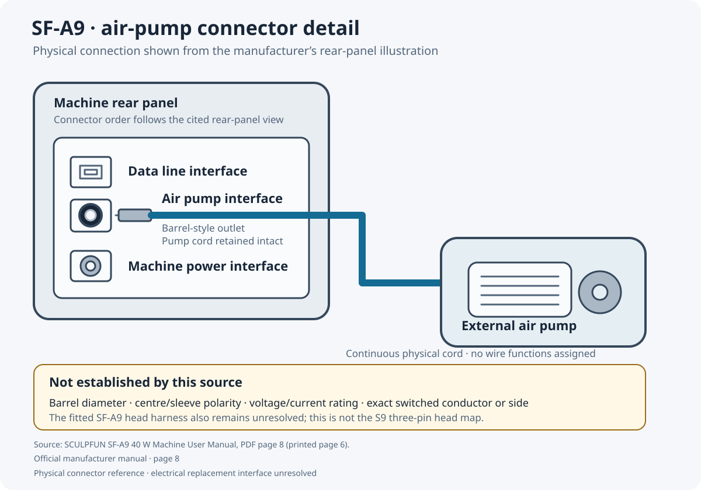

Sculpfun SF-A9
Identification leadMain wiring diagram · Smoothieboard V2 Prime
Why this controller: Original motion-driver electronics are on the board being replaced. Use Prime integrated phase outputs directly to measured winding pairs; do not connect STEP/DIR signal outputs to motor windings. Confirm installed board, motor current and power rating from the cited machine source.
Selected architecture: Replace the integrated motion board with Prime P12; wire X/Y motor windings directly to its integrated driver outputs. Identify the fitted SF-A9 laser head, power and hardware inhibit interfaces before connecting them.
Original motion-driver electronics are on the board being replaced. Use Prime integrated phase outputs directly to measured winding pairs; do not connect STEP/DIR signal outputs to motor windings. Confirm installed board, motor current and power rating from the cited machine source. Selected architecture: Prime P12 with integrated motor drivers. The main diagram and connection-ID schedule define the current proposed routes. Solid function-coloured GUESS routes need the named commissioning checks; OPEN routes remain disconnected until the missing terminal, rating or interface is established. Previous Core alternatives remain only in the superseded historical architecture record.
Current installation sequence
- Match the actual machine and controller revisions, trace the unpowered harness and verify all signal/reference, power and independent safety boundaries before energising. Follow the current connection IDs rather than the superseded architecture prose.
- X min limit · signal and ground separately: Trace cable with power isolated; confirm dry contact and NO/NC state. Leave selector pin 1 unused for passive switches; powered sensors require a matched interface.
- Y min limit · signal and ground separately: Trace cable with power isolated; confirm dry contact and NO/NC state. Leave selector pin 1 unused for passive switches; powered sensors require a matched interface.
- Original SF-A9 head · laser interface must be identified: Teardown photo board 20231103 is a reference, not proof of the 20 W fitted board. Laser connector conductors are not assigned from red/black/yellow colours. Obtain matching head/controller pinout, command threshold and flame/tilt/key/E-stop circuit before laser operation.
- X max · separately traced limit: Firsthand SF-A9 reference reports switches at both ends. Trace this individual switch and return; combined original harness ordering is not assigned from photographs.
- Y max · separately traced limit: Firsthand SF-A9 reference reports switches at both ends. Trace this individual switch and return; combined original harness ordering is not assigned from photographs.
- Prime selected · separate logic and motor supplies: This is the alternative integrated-driver architecture. The same PCB-derived contact labels occur on P121/P12, but driver type, rating and current configuration differ. Use one verified power-entry arrangement; J10 parallels VMOT and is left unused here. Board ground is shared internally; route motor current directly to power distribution, not through logic wiring. Determine actual allowed voltage/current before choosing a supply; no machine-source adapter automatically qualifies.
- Air-assist pump · separate rated output stage: Manufacturer manual pp.3–6 names air-pump port but gives no pump rating or terminal map. Identify DC/AC pump supply and installed connector before choosing a rated isolated switching stage. J20 Fan2 is a conditional DC load candidate only at matched VFET/current rating; existing laser-head command resource remains separate.
- Optional rotary accessory · fourth onboard motor channel: Manufacturer package names rotary-axis motor cable. Fitted rotary attachment is not established. Prime J8 phases are a candidate only after motor winding pairs/current, cable contacts, motor power and rotary firmware mode are identified. Do not connect an independent fourth axis at the same time as a conflicting resource.
- Laser-head power and independent flame/tilt/key/E-stop inhibition: Manual names mounted head, key switch and E-stop. The teardown reports integrated flame/tilt logic; exact fitted board/head revision and internal safety signalling remain unresolved. Retain the original hardware inhibition functions; replacing controller firmware must not silently remove them.
- X motor · Prime onboard channel A · measured winding pairs: Proposed X axis assignment to Prime channel A. PCB source establishes J5 pin 1 B2, pin 2 B1, pin 3 A2, pin 4 A1. Identify the actual motor winding pairs by continuity with power disconnected; machine connector cavity numbers and colours are not established. Confirm motor current, onboard driver rating and firmware axis mapping before installation. Never connect these winding outputs to a laser or logic input.
- Y motor · Prime onboard channel B · measured winding pairs: Proposed Y axis assignment to Prime channel B. PCB source establishes J6 pin 1 B2, pin 2 B1, pin 3 A2, pin 4 A1. Identify the actual motor winding pairs by continuity with power disconnected; machine connector cavity numbers and colours are not established. Confirm motor current, onboard driver rating and firmware axis mapping before installation. Never connect these winding outputs to a laser or logic input.
Every connection · explanation and direct source evidence
| Wire | From terminal | To terminal | Explanation, checks and source links |
|---|---|---|---|
| X min endstop signal C01-001 GUESS MAIN | X min limit · traced switch · Printed Xmin · photo revision only | Prime P12 · X min endstop · J24.3 · input | X min endstop signal: X min limit · traced switch · Printed Xmin · photo revision only → Prime P12 · X min endstop · J24.3 · input. This is a new conversion wire; the sources establish endpoint functions, while the connection and compatibility require the checks below. Trace cable with power isolated; confirm dry contact and NO/NC state. Leave selector pin 1 unused for passive switches; powered sensors require a matched interface.
|
| X min endstop GND C01-002 GUESS MAIN | Prime P12 · X min endstop · J24.2 · GND | X min limit · traced switch · Printed G · photo revision only | X min endstop GND: Prime P12 · X min endstop · J24.2 · GND → X min limit · traced switch · Printed G · photo revision only. This is a new conversion wire; the sources establish endpoint functions, while the connection and compatibility require the checks below. Trace cable with power isolated; confirm dry contact and NO/NC state. Leave selector pin 1 unused for passive switches; powered sensors require a matched interface.
|
| Y min endstop signal C02-001 GUESS MAIN | Y min limit · traced switch · Traced Y switch signal | Prime P12 · Y min endstop · J26.3 · input | Y min endstop signal: Y min limit · traced switch · Traced Y switch signal → Prime P12 · Y min endstop · J26.3 · input. This is a new conversion wire; the sources establish endpoint functions, while the connection and compatibility require the checks below. Trace cable with power isolated; confirm dry contact and NO/NC state. Leave selector pin 1 unused for passive switches; powered sensors require a matched interface.
|
| Y min endstop GND C02-002 GUESS MAIN | Prime P12 · Y min endstop · J26.2 · GND | Y min limit · traced switch · Traced Y switch return | Y min endstop GND: Prime P12 · Y min endstop · J26.2 · GND → Y min limit · traced switch · Traced Y switch return. This is a new conversion wire; the sources establish endpoint functions, while the connection and compatibility require the checks below. Trace cable with power isolated; confirm dry contact and NO/NC state. Leave selector pin 1 unused for passive switches; powered sensors require a matched interface.
|
| J35.6 · PWM candidate C03-001 OPEN MAIN | V2 Prime P12 · proposed signals · J35.6 · PWM candidate | Retained machine peripheral · Head command · not source-mapped | J35.6 · PWM candidate: V2 Prime P12 · proposed signals · J35.6 · PWM candidate → Retained machine peripheral · Head command · not source-mapped. The fitted interface or electrical contract is unresolved. The broken path is a boundary to identify, not a wire to install. Teardown photo board 20231103 is a reference, not proof of the 20 W fitted board. Laser connector conductors are not assigned from red/black/yellow colours. Obtain matching head/controller pinout, command threshold and flame/tilt/key/E-stop circuit before laser operation.
|
| J35.10 · reference candidate C03-002 OPEN MAIN | V2 Prime P12 · proposed signals · J35.10 · reference candidate | Retained machine peripheral · Head reference · not source-mapped | J35.10 · reference candidate: V2 Prime P12 · proposed signals · J35.10 · reference candidate → Retained machine peripheral · Head reference · not source-mapped. The fitted interface or electrical contract is unresolved. The broken path is a boundary to identify, not a wire to install. Teardown photo board 20231103 is a reference, not proof of the 20 W fitted board. Laser connector conductors are not assigned from red/black/yellow colours. Obtain matching head/controller pinout, command threshold and flame/tilt/key/E-stop circuit before laser operation.
|
| X max signal C04-001 GUESS MAIN | X max dry-contact switch · Identified signal lead | Prime P12 · proposed X max · J25.3 · input | X max signal: X max dry-contact switch · Identified signal lead → Prime P12 · proposed X max · J25.3 · input. This is a new conversion wire; the sources establish endpoint functions, while the connection and compatibility require the checks below. Firsthand SF-A9 reference reports switches at both ends. Trace this individual switch and return; combined original harness ordering is not assigned from photographs.
|
| X max GND C04-002 GUESS MAIN | Prime P12 · proposed X max · J25.2 · GND | X max dry-contact switch · Identified return lead | X max GND: Prime P12 · proposed X max · J25.2 · GND → X max dry-contact switch · Identified return lead. This is a new conversion wire; the sources establish endpoint functions, while the connection and compatibility require the checks below. Firsthand SF-A9 reference reports switches at both ends. Trace this individual switch and return; combined original harness ordering is not assigned from photographs.
|
| Y max signal C05-001 GUESS MAIN | Y max dry-contact switch · Identified signal lead | Prime P12 · proposed Y max · J27.3 · input | Y max signal: Y max dry-contact switch · Identified signal lead → Prime P12 · proposed Y max · J27.3 · input. This is a new conversion wire; the sources establish endpoint functions, while the connection and compatibility require the checks below. Firsthand SF-A9 reference reports switches at both ends. Trace this individual switch and return; combined original harness ordering is not assigned from photographs.
|
| Y max GND C05-002 GUESS MAIN | Prime P12 · proposed Y max · J27.2 · GND | Y max dry-contact switch · Identified return lead | Y max GND: Prime P12 · proposed Y max · J27.2 · GND → Y max dry-contact switch · Identified return lead. This is a new conversion wire; the sources establish endpoint functions, while the connection and compatibility require the checks below. Firsthand SF-A9 reference reports switches at both ends. Trace this individual switch and return; combined original harness ordering is not assigned from photographs.
|
| Prime regulated logic supply C06-001 GUESS MAIN | Regulated 5 V logic supply · +5 V regulated | Prime P12 · confirm exact revision · J42.1 · 5V_PORTIN | Prime regulated logic supply: Regulated 5 V logic supply · +5 V regulated → Prime P12 · confirm exact revision · J42.1 · 5V_PORTIN. This is a new conversion wire; the sources establish endpoint functions, while the connection and compatibility require the checks below. Prime alternative only. Confirm fitted P11/P12 revision, input-voltage/current limits, supply sequencing and fuse/conductor ratings. Never connect both Core external drivers and Prime winding outputs to the same motor.
|
| Prime logic supply return C06-002 GUESS MAIN | Regulated 5 V logic supply · 0 V logic return | Prime P12 · confirm exact revision · J42.2 · GND | Prime logic supply return: Regulated 5 V logic supply · 0 V logic return → Prime P12 · confirm exact revision · J42.2 · GND. This is a new conversion wire; the sources establish endpoint functions, while the connection and compatibility require the checks below. Prime alternative only. Confirm fitted P11/P12 revision, input-voltage/current limits, supply sequencing and fuse/conductor ratings. Never connect both Core external drivers and Prime winding outputs to the same motor.
|
| Protected motor branch input C06-003 GUESS MAIN | Verified motor supply · voltage/current TBD · DC + · before fuse | Motor branch fuse · rating selected after measurement · fuse input | Protected motor branch input: Verified motor supply · voltage/current TBD · DC + · before fuse → Motor branch fuse · rating selected after measurement · fuse input. This is a new conversion wire; the sources establish endpoint functions, while the connection and compatibility require the checks below. Prime alternative only. Confirm fitted P11/P12 revision, input-voltage/current limits, supply sequencing and fuse/conductor ratings. Never connect both Core external drivers and Prime winding outputs to the same motor.
|
| Prime VMOT power C06-004 GUESS MAIN | Motor branch fuse · rating selected after measurement · fuse output | Prime P12 · confirm exact revision · J9.1 · VMOT | Prime VMOT power: Motor branch fuse · rating selected after measurement · fuse output → Prime P12 · confirm exact revision · J9.1 · VMOT. This is a new conversion wire; the sources establish endpoint functions, while the connection and compatibility require the checks below. Prime alternative only. Confirm fitted P11/P12 revision, input-voltage/current limits, supply sequencing and fuse/conductor ratings. Never connect both Core external drivers and Prime winding outputs to the same motor.
|
| Prime motor supply return C06-005 GUESS MAIN | Verified motor supply · voltage/current TBD · 0 V motor return | Prime P12 · confirm exact revision · J9.2 · GND | Prime motor supply return: Verified motor supply · voltage/current TBD · 0 V motor return → Prime P12 · confirm exact revision · J9.2 · GND. This is a new conversion wire; the sources establish endpoint functions, while the connection and compatibility require the checks below. Prime alternative only. Confirm fitted P11/P12 revision, input-voltage/current limits, supply sequencing and fuse/conductor ratings. Never connect both Core external drivers and Prime winding outputs to the same motor.
|
| Conditional pump power-stage supply C07-001 OPEN MAIN | Prime P12 · conditional DC pump output · J20.1 · cutoff-switched VFET | Rated pump protection/interface · identify load · Pump-stage supply + | Conditional pump power-stage supply: Prime P12 · conditional DC pump output · J20.1 · cutoff-switched VFET → Rated pump protection/interface · identify load · Pump-stage supply +. The fitted interface or electrical contract is unresolved. The broken path is a boundary to identify, not a wire to install. Manufacturer manual pp.3–6 names air-pump port but gives no pump rating or terminal map. Identify DC/AC pump supply and installed connector before choosing a rated isolated switching stage. J20 Fan2 is a conditional DC load candidate only at matched VFET/current rating; existing laser-head command resource remains separate.
|
| Conditional pump power-stage return C07-002 OPEN MAIN | Prime P12 · conditional DC pump output · J20.2 · switched return Q22 | Rated pump protection/interface · identify load · Pump-stage switched return | Conditional pump power-stage return: Prime P12 · conditional DC pump output · J20.2 · switched return Q22 → Rated pump protection/interface · identify load · Pump-stage switched return. The fitted interface or electrical contract is unresolved. The broken path is a boundary to identify, not a wire to install. Manufacturer manual pp.3–6 names air-pump port but gives no pump rating or terminal map. Identify DC/AC pump supply and installed connector before choosing a rated isolated switching stage. J20 Fan2 is a conditional DC load candidate only at matched VFET/current rating; existing laser-head command resource remains separate.
|
| Rated air-pump supply C07-003 OPEN MAIN | Rated pump protection/interface · identify load · Pump-stage supply + | Original SF-A9 air pump · label/rating required · Identify pump supply lead | Rated air-pump supply: Rated pump protection/interface · identify load · Pump-stage supply + → Original SF-A9 air pump · label/rating required · Identify pump supply lead. The fitted interface or electrical contract is unresolved. The broken path is a boundary to identify, not a wire to install. Manufacturer manual pp.3–6 names air-pump port but gives no pump rating or terminal map. Identify DC/AC pump supply and installed connector before choosing a rated isolated switching stage. J20 Fan2 is a conditional DC load candidate only at matched VFET/current rating; existing laser-head command resource remains separate.
|
| Rated air-pump return C07-004 OPEN MAIN | Rated pump protection/interface · identify load · Pump-stage switched return | Original SF-A9 air pump · label/rating required · Identify pump return lead | Rated air-pump return: Rated pump protection/interface · identify load · Pump-stage switched return → Original SF-A9 air pump · label/rating required · Identify pump return lead. The fitted interface or electrical contract is unresolved. The broken path is a boundary to identify, not a wire to install. Manufacturer manual pp.3–6 names air-pump port but gives no pump rating or terminal map. Identify DC/AC pump supply and installed connector before choosing a rated isolated switching stage. J20 Fan2 is a conditional DC load candidate only at matched VFET/current rating; existing laser-head command resource remains separate.
|
| Rotary measured winding conductor 1 C08-001 GUESS DETAILED CIRCUIT | Prime P12 · motor channel D · J8.1 · B2 | Optional rotary motor · measured winding identities · B winding lead 2 | Rotary measured winding conductor 1: Prime P12 · motor channel D · J8.1 · B2 → Optional rotary motor · measured winding identities · B winding lead 2. This is a new conversion wire; the sources establish endpoint functions, while the connection and compatibility require the checks below. Manufacturer package names rotary-axis motor cable. Fitted rotary attachment is not established. Prime J8 phases are a candidate only after motor winding pairs/current, cable contacts, motor power and rotary firmware mode are identified. Do not connect an independent fourth axis at the same time as a conflicting resource.
|
| Rotary measured winding conductor 2 C08-002 GUESS DETAILED CIRCUIT | Prime P12 · motor channel D · J8.2 · B1 | Optional rotary motor · measured winding identities · B winding lead 1 | Rotary measured winding conductor 2: Prime P12 · motor channel D · J8.2 · B1 → Optional rotary motor · measured winding identities · B winding lead 1. This is a new conversion wire; the sources establish endpoint functions, while the connection and compatibility require the checks below. Manufacturer package names rotary-axis motor cable. Fitted rotary attachment is not established. Prime J8 phases are a candidate only after motor winding pairs/current, cable contacts, motor power and rotary firmware mode are identified. Do not connect an independent fourth axis at the same time as a conflicting resource.
|
| Rotary measured winding conductor 3 C08-003 GUESS DETAILED CIRCUIT | Prime P12 · motor channel D · J8.3 · A2 | Optional rotary motor · measured winding identities · A winding lead 2 | Rotary measured winding conductor 3: Prime P12 · motor channel D · J8.3 · A2 → Optional rotary motor · measured winding identities · A winding lead 2. This is a new conversion wire; the sources establish endpoint functions, while the connection and compatibility require the checks below. Manufacturer package names rotary-axis motor cable. Fitted rotary attachment is not established. Prime J8 phases are a candidate only after motor winding pairs/current, cable contacts, motor power and rotary firmware mode are identified. Do not connect an independent fourth axis at the same time as a conflicting resource.
|
| Rotary measured winding conductor 4 C08-004 GUESS DETAILED CIRCUIT | Prime P12 · motor channel D · J8.4 · A1 | Optional rotary motor · measured winding identities · A winding lead 1 | Rotary measured winding conductor 4: Prime P12 · motor channel D · J8.4 · A1 → Optional rotary motor · measured winding identities · A winding lead 1. This is a new conversion wire; the sources establish endpoint functions, while the connection and compatibility require the checks below. Manufacturer package names rotary-axis motor cable. Fitted rotary attachment is not established. Prime J8 phases are a candidate only after motor winding pairs/current, cable contacts, motor power and rotary firmware mode are identified. Do not connect an independent fourth axis at the same time as a conflicting resource.
|
| Laser-head stage supply C09-001 OPEN MAIN | Verified laser-head fused supply · rating unknown · Head supply + | Original SF-A9 laser head · exact connector needed · Identify head power + | Laser-head stage supply: Verified laser-head fused supply · rating unknown · Head supply + → Original SF-A9 laser head · exact connector needed · Identify head power +. The fitted interface or electrical contract is unresolved. The broken path is a boundary to identify, not a wire to install. Manual names mounted head, key switch and E-stop. The teardown reports integrated flame/tilt logic; exact fitted board/head revision and internal safety signalling remain unresolved. Retain the original hardware inhibition functions; replacing controller firmware must not silently remove them.
|
| Laser-head power return C09-002 OPEN MAIN | Verified laser-head fused supply · rating unknown · Head power return | Original SF-A9 laser head · exact connector needed · Identify head power return | Laser-head power return: Verified laser-head fused supply · rating unknown · Head power return → Original SF-A9 laser head · exact connector needed · Identify head power return. The fitted interface or electrical contract is unresolved. The broken path is a boundary to identify, not a wire to install. Manual names mounted head, key switch and E-stop. The teardown reports integrated flame/tilt logic; exact fitted board/head revision and internal safety signalling remain unresolved. Retain the original hardware inhibition functions; replacing controller firmware must not silently remove them.
|
| Independent laser inhibition chain C09-003 OPEN MAIN | Key + E-stop + flame/tilt hardware chain · Identify independent inhibition input | Original SF-A9 laser head · exact connector needed · Identify flame/tilt inhibition interface | Independent laser inhibition chain: Key + E-stop + flame/tilt hardware chain · Identify independent inhibition input → Original SF-A9 laser head · exact connector needed · Identify flame/tilt inhibition interface. The fitted interface or electrical contract is unresolved. The broken path is a boundary to identify, not a wire to install. Manual names mounted head, key switch and E-stop. The teardown reports integrated flame/tilt logic; exact fitted board/head revision and internal safety signalling remain unresolved. Retain the original hardware inhibition functions; replacing controller firmware must not silently remove them.
|
| X motor measured winding conductor 1 C10-001 GUESS MAIN | Prime P12 · motor channel A · J5.1 · B2 | X motor · measured winding identities · B winding lead 2 | X motor measured winding conductor 1: Prime P12 · motor channel A · J5.1 · B2 → X motor · measured winding identities · B winding lead 2. This is a new conversion wire; the sources establish endpoint functions, while the connection and compatibility require the checks below. Proposed X axis assignment to Prime channel A. PCB source establishes J5 pin 1 B2, pin 2 B1, pin 3 A2, pin 4 A1. Identify the actual motor winding pairs by continuity with power disconnected; machine connector cavity numbers and colours are not established. Confirm motor current, onboard driver rating and firmware axis mapping before installation. Never connect these winding outputs to a laser or logic input.
|
| X motor measured winding conductor 2 C10-002 GUESS MAIN | Prime P12 · motor channel A · J5.2 · B1 | X motor · measured winding identities · B winding lead 1 | X motor measured winding conductor 2: Prime P12 · motor channel A · J5.2 · B1 → X motor · measured winding identities · B winding lead 1. This is a new conversion wire; the sources establish endpoint functions, while the connection and compatibility require the checks below. Proposed X axis assignment to Prime channel A. PCB source establishes J5 pin 1 B2, pin 2 B1, pin 3 A2, pin 4 A1. Identify the actual motor winding pairs by continuity with power disconnected; machine connector cavity numbers and colours are not established. Confirm motor current, onboard driver rating and firmware axis mapping before installation. Never connect these winding outputs to a laser or logic input.
|
| X motor measured winding conductor 3 C10-003 GUESS MAIN | Prime P12 · motor channel A · J5.3 · A2 | X motor · measured winding identities · A winding lead 2 | X motor measured winding conductor 3: Prime P12 · motor channel A · J5.3 · A2 → X motor · measured winding identities · A winding lead 2. This is a new conversion wire; the sources establish endpoint functions, while the connection and compatibility require the checks below. Proposed X axis assignment to Prime channel A. PCB source establishes J5 pin 1 B2, pin 2 B1, pin 3 A2, pin 4 A1. Identify the actual motor winding pairs by continuity with power disconnected; machine connector cavity numbers and colours are not established. Confirm motor current, onboard driver rating and firmware axis mapping before installation. Never connect these winding outputs to a laser or logic input.
|
| X motor measured winding conductor 4 C10-004 GUESS MAIN | Prime P12 · motor channel A · J5.4 · A1 | X motor · measured winding identities · A winding lead 1 | X motor measured winding conductor 4: Prime P12 · motor channel A · J5.4 · A1 → X motor · measured winding identities · A winding lead 1. This is a new conversion wire; the sources establish endpoint functions, while the connection and compatibility require the checks below. Proposed X axis assignment to Prime channel A. PCB source establishes J5 pin 1 B2, pin 2 B1, pin 3 A2, pin 4 A1. Identify the actual motor winding pairs by continuity with power disconnected; machine connector cavity numbers and colours are not established. Confirm motor current, onboard driver rating and firmware axis mapping before installation. Never connect these winding outputs to a laser or logic input.
|
| Y motor measured winding conductor 1 C11-001 GUESS MAIN | Prime P12 · motor channel B · J6.1 · B2 | Y motor · measured winding identities · B winding lead 2 | Y motor measured winding conductor 1: Prime P12 · motor channel B · J6.1 · B2 → Y motor · measured winding identities · B winding lead 2. This is a new conversion wire; the sources establish endpoint functions, while the connection and compatibility require the checks below. Proposed Y axis assignment to Prime channel B. PCB source establishes J6 pin 1 B2, pin 2 B1, pin 3 A2, pin 4 A1. Identify the actual motor winding pairs by continuity with power disconnected; machine connector cavity numbers and colours are not established. Confirm motor current, onboard driver rating and firmware axis mapping before installation. Never connect these winding outputs to a laser or logic input.
|
| Y motor measured winding conductor 2 C11-002 GUESS MAIN | Prime P12 · motor channel B · J6.2 · B1 | Y motor · measured winding identities · B winding lead 1 | Y motor measured winding conductor 2: Prime P12 · motor channel B · J6.2 · B1 → Y motor · measured winding identities · B winding lead 1. This is a new conversion wire; the sources establish endpoint functions, while the connection and compatibility require the checks below. Proposed Y axis assignment to Prime channel B. PCB source establishes J6 pin 1 B2, pin 2 B1, pin 3 A2, pin 4 A1. Identify the actual motor winding pairs by continuity with power disconnected; machine connector cavity numbers and colours are not established. Confirm motor current, onboard driver rating and firmware axis mapping before installation. Never connect these winding outputs to a laser or logic input.
|
| Y motor measured winding conductor 3 C11-003 GUESS MAIN | Prime P12 · motor channel B · J6.3 · A2 | Y motor · measured winding identities · A winding lead 2 | Y motor measured winding conductor 3: Prime P12 · motor channel B · J6.3 · A2 → Y motor · measured winding identities · A winding lead 2. This is a new conversion wire; the sources establish endpoint functions, while the connection and compatibility require the checks below. Proposed Y axis assignment to Prime channel B. PCB source establishes J6 pin 1 B2, pin 2 B1, pin 3 A2, pin 4 A1. Identify the actual motor winding pairs by continuity with power disconnected; machine connector cavity numbers and colours are not established. Confirm motor current, onboard driver rating and firmware axis mapping before installation. Never connect these winding outputs to a laser or logic input.
|
| Y motor measured winding conductor 4 C11-004 GUESS MAIN | Prime P12 · motor channel B · J6.4 · A1 | Y motor · measured winding identities · A winding lead 1 | Y motor measured winding conductor 4: Prime P12 · motor channel B · J6.4 · A1 → Y motor · measured winding identities · A winding lead 1. This is a new conversion wire; the sources establish endpoint functions, while the connection and compatibility require the checks below. Proposed Y axis assignment to Prime channel B. PCB source establishes J6 pin 1 B2, pin 2 B1, pin 3 A2, pin 4 A1. Identify the actual motor winding pairs by continuity with power disconnected; machine connector cavity numbers and colours are not established. Confirm motor current, onboard driver rating and firmware axis mapping before installation. Never connect these winding outputs to a laser or logic input.
|
Unused or unresolved terminals · explicit dispositions
| Circuit | Terminal | Disposition and sources |
|---|---|---|
| X min limit · signal and ground separately | Prime P12 · X min endstop · J24.1 · selector supply · NC | No conductor drawn. Trace cable with power isolated; confirm dry contact and NO/NC state. Leave selector pin 1 unused for passive switches; powered sensors require a matched interface. Prime P12 exact source · inputs.kicad_sch; Sculpfun SF-A9 20W manual (Version A) |
| Y min limit · signal and ground separately | Prime P12 · Y min endstop · J26.1 · selector supply · NC | No conductor drawn. Trace cable with power isolated; confirm dry contact and NO/NC state. Leave selector pin 1 unused for passive switches; powered sensors require a matched interface. Prime P12 exact source · inputs.kicad_sch; Sculpfun SF-A9 20W manual (Version A) |
| X max · separately traced limit | Prime P12 · proposed X max · J25.1 · selector supply · NC | No conductor drawn. Firsthand SF-A9 reference reports switches at both ends. Trace this individual switch and return; combined original harness ordering is not assigned from photographs. Prime P12 exact source · inputs.kicad_sch; Sculpfun SF-A9 20W manual (Version A) |
| Y max · separately traced limit | Prime P12 · proposed Y max · J27.1 · selector supply · NC | No conductor drawn. Firsthand SF-A9 reference reports switches at both ends. Trace this individual switch and return; combined original harness ordering is not assigned from photographs. Prime P12 exact source · inputs.kicad_sch; Sculpfun SF-A9 20W manual (Version A) |
| Prime selected · separate logic and motor supplies | Prime P12 · confirm exact revision · J10.1 · VMOT parallel · unused | No conductor drawn. This is the alternative integrated-driver architecture. The same PCB-derived contact labels occur on P121/P12, but driver type, rating and current configuration differ. Use one verified power-entry arrangement; J10 parallels VMOT and is left unused here. Board ground is shared internally; route motor current directly to power distribution, not through logic wiring. Determine actual allowed voltage/current before choosing a supply; no machine-source adapter automatically qualifies. Prime P12 exact source · smoothiev2-prime.kicad_pcb; Sculpfun SF-A9 20W manual (Version A) |
| Prime selected · separate logic and motor supplies | Prime P12 · confirm exact revision · J10.2 · GND parallel · unused | No conductor drawn. This is the alternative integrated-driver architecture. The same PCB-derived contact labels occur on P121/P12, but driver type, rating and current configuration differ. Use one verified power-entry arrangement; J10 parallels VMOT and is left unused here. Board ground is shared internally; route motor current directly to power distribution, not through logic wiring. Determine actual allowed voltage/current before choosing a supply; no machine-source adapter automatically qualifies. Prime P12 exact source · smoothiev2-prime.kicad_pcb; Sculpfun SF-A9 20W manual (Version A) |
| Laser-head power and independent flame/tilt/key/E-stop inhibition | Key + E-stop + flame/tilt hardware chain · Identify inhibition return | No conductor drawn. Manual names mounted head, key switch and E-stop. The teardown reports integrated flame/tilt logic; exact fitted board/head revision and internal safety signalling remain unresolved. Retain the original hardware inhibition functions; replacing controller firmware must not silently remove them. Prime P12 exact source · smoothiev2-prime.kicad_pcb; Sculpfun SF-A9 20W manual (Version A) |
The earlier circuit details remain immediately below.
Earlier alternative retrofit architecture and circuit details
Owner retrofit guide · Sculpfun SF-A9 diode laser
The motion replacement is now an individual-conductor Core-to-driver-to-motor plan, including both motor coils and separate supply/return circuits. Manufacturer 20 W supply reference is 24 V/7 A; total replacement load capacity must still be measured. Original head command and integrated flame/tilt safety are not electrically documented, so the specific laser boundary stays disconnected rather than inventing a pin map.
Which Smoothie target fits this machine?
- SmoothieBox: Use a Core-based box for the drawn external-driver option, or a Prime-based box for the rated winding-output option. Trace the actual carrier harness; exterior connector names do not establish board pin numbers.
- V2 Core: Main drawing uses Core P1 logic and new Pololu 2133 drivers. Use only when measured motor current and supply fit the carrier; otherwise select a suitably rated driver and redraw its exact terminals.
- V2 Prime: Alternative: onboard winding outputs J5/J6/J7/J8, each pin 1 B2, 2 B1, 3 A2, 4 A1. Assign the required motors in firmware; check fitted P11/P12 current, voltage and thermal limits before replacing external drivers.
Retain or add
- A separate documented driver per motor, branch fuses and enclosed terminal distribution; never connect Core STEP/DIR pins to motor windings.
- Identify each winding pair by continuity with power isolated. Label the newly terminated leads A1/A2/B1/B2; do not infer original cavity numbering or wire colours.
- Core logic power: regulated 5 V to J42.1, return to J42.2, with exact board revision and supply-path checks. Motor power uses its own fused distribution.
Conversion and commissioning
- Photograph nameplates, connector orientation and existing safety wiring before disconnecting anything. Match the fitted board revision to the linked hardware source.
- Disconnect the old motor-controller outputs before connecting the new drivers. Identify each coil pair and trace every endstop signal and return.
- Set driver current from the motor rating, verify supplies and pull-ups, and configure channels and enable polarity. Initial MODE pins open means full step; update firmware steps/mm when selecting microsteps.
- With process power disconnected, verify reset keeps drives disabled, test one motor at a time, then check endstop status, homing direction and travel. Enable the process only after its separate interface and hardware safety chain are proven.
Terminal-to-terminal route schedule
| From terminal | Conductor purpose | To terminal | Evidence and preconnection check |
|---|---|---|---|
| Regulated logic distribution · +5 V regulated | Core 5 V power | Core P1 · logic power · J42.1 · 5V input | GUESS · Verify exact board supply path and rail ratings; motor current uses separate wiring and fuses. |
| Regulated logic distribution · 0 V logic return | Core supply return | Core P1 · logic power · J42.2 · GND | GUESS · Verify exact board supply path and rail ratings; motor current uses separate wiring and fuses. |
| Core P1 · all selected DRV8825 enables · J5.10 · 3V3 | Enable pull-up supply | R_EN · 4.7 kΩ pull-up · terminal A | GUESS · Use 3V3 only; check total enable pin pull-down load. |
| R_EN · 4.7 kΩ pull-up · terminal B | Disable drivers while GPIO floats | Core P1 · all selected DRV8825 enables · J5.13 · shared MOT_EN | GUESS · DRV8825 ENBL active LOW. Verify loaded high level and firmware reset/startup; GPIO must actively drive correct polarity. |
| V2 Core P1 · X assignment · J5.16 · X STEP | X step pulses | Pololu 2133 · DRV8825 · STEP | GUESS · Verify motor nameplate current, supply rating, cooling and coil pairs. New lead labels are continuity-test results, not original connector cavity numbers. |
| V2 Core P1 · X assignment · J5.18 · X DIR | X direction | Pololu 2133 · DRV8825 · DIR | GUESS · Verify motor nameplate current, supply rating, cooling and coil pairs. New lead labels are continuity-test results, not original connector cavity numbers. |
| V2 Core P1 · X assignment · J5.20 · signal GND | X signal reference | Pololu 2133 · DRV8825 · GND · logic | GUESS · Bond logic and motor returns at defined distribution point; no motor current through Core. |
| V2 Core P1 · X assignment · J5.10 · 3V3 | Release driver reset | Pololu 2133 · DRV8825 · RESET | GUESS · RESET and SLEEP must be high; confirm 3V3 rail budget. |
| V2 Core P1 · X assignment · J5.10 · 3V3 | Wake driver | Pololu 2133 · DRV8825 · SLEEP | GUESS · Confirm supply and start-up sequence. |
| V2 Core P1 · X assignment · J5.13 · shared MOT_EN | Shared active-low driver enable | Pololu 2133 · DRV8825 · ENBL | GUESS · Configure polarity; add pull-up to disable during reset. Slash net prefix is not polarity evidence. |
| Pololu 2133 · DRV8825 · A1 | X phase A1 | X motor · newly identified leads · Winding A · lead 1 | GUESS · Verify motor nameplate current, supply rating, cooling and coil pairs. New lead labels are continuity-test results, not original connector cavity numbers. |
| Pololu 2133 · DRV8825 · A2 | X phase A2 | X motor · newly identified leads · Winding A · lead 2 | GUESS · Verify motor nameplate current, supply rating, cooling and coil pairs. New lead labels are continuity-test results, not original connector cavity numbers. |
| Pololu 2133 · DRV8825 · B1 | X phase B1 | X motor · newly identified leads · Winding B · lead 1 | GUESS · Verify motor nameplate current, supply rating, cooling and coil pairs. New lead labels are continuity-test results, not original connector cavity numbers. |
| Pololu 2133 · DRV8825 · B2 | X phase B2 | X motor · newly identified leads · Winding B · lead 2 | GUESS · Verify motor nameplate current, supply rating, cooling and coil pairs. New lead labels are continuity-test results, not original connector cavity numbers. |
| Fused motor supply · 24 V / SF-A9 20 W source · DC return | X motor power return | Pololu 2133 · DRV8825 · GND · motor | GUESS · Verify motor nameplate current, supply rating, cooling and coil pairs. New lead labels are continuity-test results, not original connector cavity numbers. |
| Fused motor supply · 24 V / SF-A9 20 W source · DC + · before branch fuse | Individual fused branch input | Individual branch fuse · rating TBD · input from DC + | GUESS · Choose DC voltage/current/interrupt rating from measured load and conductor protection; locate near distribution. |
| Individual branch fuse · rating TBD · output to VMOT | Fused motor power | Pololu 2133 · DRV8825 · VMOT | GUESS · Verify motor current setting, cooling, supply and wiring capacity. |
| Individual branch fuse · rating TBD · output to VMOT | Local VMOT bypass positive | Local bulk capacitor · ≥47 µF · positive · VMOT rail | GUESS · At least 47 µF electrolytic close to driver; voltage rating above worst supply/transient, verify polarity. |
| Fused motor supply · 24 V / SF-A9 20 W source · DC return | Local VMOT bypass return | Local bulk capacitor · ≥47 µF · negative · motor return | GUESS · Short loop to motor GND; no motor current through Core logic return. |
| V2 Core P1 · Y assignment · J5.22 · Y STEP | Y step pulses | Pololu 2133 · DRV8825 · STEP | GUESS · Verify motor nameplate current, supply rating, cooling and coil pairs. New lead labels are continuity-test results, not original connector cavity numbers. |
| V2 Core P1 · Y assignment · J5.24 · Y DIR | Y direction | Pololu 2133 · DRV8825 · DIR | GUESS · Verify motor nameplate current, supply rating, cooling and coil pairs. New lead labels are continuity-test results, not original connector cavity numbers. |
| V2 Core P1 · Y assignment · J5.26 · signal GND | Y signal reference | Pololu 2133 · DRV8825 · GND · logic | GUESS · Bond logic and motor returns at defined distribution point; no motor current through Core. |
| V2 Core P1 · Y assignment · J5.10 · 3V3 | Release driver reset | Pololu 2133 · DRV8825 · RESET | GUESS · RESET and SLEEP must be high; confirm 3V3 rail budget. |
| V2 Core P1 · Y assignment · J5.10 · 3V3 | Wake driver | Pololu 2133 · DRV8825 · SLEEP | GUESS · Confirm supply and start-up sequence. |
| V2 Core P1 · Y assignment · J5.13 · shared MOT_EN | Shared active-low driver enable | Pololu 2133 · DRV8825 · ENBL | GUESS · Configure polarity; add pull-up to disable during reset. Slash net prefix is not polarity evidence. |
| Pololu 2133 · DRV8825 · A1 | Y phase A1 | Y motor · newly identified leads · Winding A · lead 1 | GUESS · Verify motor nameplate current, supply rating, cooling and coil pairs. New lead labels are continuity-test results, not original connector cavity numbers. |
| Pololu 2133 · DRV8825 · A2 | Y phase A2 | Y motor · newly identified leads · Winding A · lead 2 | GUESS · Verify motor nameplate current, supply rating, cooling and coil pairs. New lead labels are continuity-test results, not original connector cavity numbers. |
| Pololu 2133 · DRV8825 · B1 | Y phase B1 | Y motor · newly identified leads · Winding B · lead 1 | GUESS · Verify motor nameplate current, supply rating, cooling and coil pairs. New lead labels are continuity-test results, not original connector cavity numbers. |
| Pololu 2133 · DRV8825 · B2 | Y phase B2 | Y motor · newly identified leads · Winding B · lead 2 | GUESS · Verify motor nameplate current, supply rating, cooling and coil pairs. New lead labels are continuity-test results, not original connector cavity numbers. |
| Fused motor supply · 24 V / SF-A9 20 W source · DC return | Y motor power return | Pololu 2133 · DRV8825 · GND · motor | GUESS · Verify motor nameplate current, supply rating, cooling and coil pairs. New lead labels are continuity-test results, not original connector cavity numbers. |
| Fused motor supply · 24 V / SF-A9 20 W source · DC + · before branch fuse | Individual fused branch input | Individual branch fuse · rating TBD · input from DC + | GUESS · Choose DC voltage/current/interrupt rating from measured load and conductor protection; locate near distribution. |
| Individual branch fuse · rating TBD · output to VMOT | Fused motor power | Pololu 2133 · DRV8825 · VMOT | GUESS · Verify motor current setting, cooling, supply and wiring capacity. |
| Individual branch fuse · rating TBD · output to VMOT | Local VMOT bypass positive | Local bulk capacitor · ≥47 µF · positive · VMOT rail | GUESS · At least 47 µF electrolytic close to driver; voltage rating above worst supply/transient, verify polarity. |
| Fused motor supply · 24 V / SF-A9 20 W source · DC return | Local VMOT bypass return | Local bulk capacitor · ≥47 µF · negative · motor return | GUESS · Short loop to motor GND; no motor current through Core logic return. |
| X min limit · traced switch · Printed Xmin · photo revision only | X min endstop signal | Core P1 · X min endstop · J24.3 · input | GUESS · Trace cable with power isolated; confirm dry contact and NO/NC state. Leave selector pin 1 unused for passive switches; powered sensors require a matched interface. |
| Core P1 · X min endstop · J24.2 · GND | X min endstop GND | X min limit · traced switch · Printed G · photo revision only | GUESS · Trace cable with power isolated; confirm dry contact and NO/NC state. Leave selector pin 1 unused for passive switches; powered sensors require a matched interface. |
| Y min limit · traced switch · Traced Y switch signal | Y min endstop signal | Core P1 · Y min endstop · J26.3 · input | GUESS · Trace cable with power isolated; confirm dry contact and NO/NC state. Leave selector pin 1 unused for passive switches; powered sensors require a matched interface. |
| Core P1 · Y min endstop · J26.2 · GND | Y min endstop GND | Y min limit · traced switch · Traced Y switch return | GUESS · Trace cable with power isolated; confirm dry contact and NO/NC state. Leave selector pin 1 unused for passive switches; powered sensors require a matched interface. |
| V2 Core P1 · proposed signals · J35.6 · PWM candidate | J35.6 · PWM candidate | Retained machine peripheral · Head command · not source-mapped | OPEN · Teardown photo board 20231103 is a reference, not proof of the 20 W fitted board. Laser connector conductors are not assigned from red/black/yellow colours. Obtain matching head/controller pinout, command threshold and flame/tilt/key/E-stop circuit before laser operation. |
| V2 Core P1 · proposed signals · J35.10 · reference candidate | J35.10 · reference candidate | Retained machine peripheral · Head reference · not source-mapped | OPEN · Teardown photo board 20231103 is a reference, not proof of the 20 W fitted board. Laser connector conductors are not assigned from red/black/yellow colours. Obtain matching head/controller pinout, command threshold and flame/tilt/key/E-stop circuit before laser operation. |
| X max dry-contact switch · Identified signal lead | X max signal | Core P1 · proposed X max · J25.3 · input | GUESS · Firsthand SF-A9 reference reports switches at both ends. Trace this individual switch and return; combined original harness ordering is not assigned from photographs. |
| Core P1 · proposed X max · J25.2 · GND | X max GND | X max dry-contact switch · Identified return lead | GUESS · Firsthand SF-A9 reference reports switches at both ends. Trace this individual switch and return; combined original harness ordering is not assigned from photographs. |
| Y max dry-contact switch · Identified signal lead | Y max signal | Core P1 · proposed Y max · J27.3 · input | GUESS · Firsthand SF-A9 reference reports switches at both ends. Trace this individual switch and return; combined original harness ordering is not assigned from photographs. |
| Core P1 · proposed Y max · J27.2 · GND | Y max GND | Y max dry-contact switch · Identified return lead | GUESS · Firsthand SF-A9 reference reports switches at both ends. Trace this individual switch and return; combined original harness ordering is not assigned from photographs. |
| Prime P11/P12 · X · J5.1 · B2 | X motor phase B2 | X · measured winding leads · Winding B · lead 2 | GUESS · Alternative to the external-driver circuit, never simultaneously connected. Verify selected Prime revision, current settings, supply rating and winding pairs. |
| Prime P11/P12 · X · J5.2 · B1 | X motor phase B1 | X · measured winding leads · Winding B · lead 1 | GUESS · Alternative to the external-driver circuit, never simultaneously connected. Verify selected Prime revision, current settings, supply rating and winding pairs. |
| Prime P11/P12 · X · J5.3 · A2 | X motor phase A2 | X · measured winding leads · Winding A · lead 2 | GUESS · Alternative to the external-driver circuit, never simultaneously connected. Verify selected Prime revision, current settings, supply rating and winding pairs. |
| Prime P11/P12 · X · J5.4 · A1 | X motor phase A1 | X · measured winding leads · Winding A · lead 1 | GUESS · Alternative to the external-driver circuit, never simultaneously connected. Verify selected Prime revision, current settings, supply rating and winding pairs. |
| Prime P11/P12 · Y · J6.1 · B2 | Y motor phase B2 | Y · measured winding leads · Winding B · lead 2 | GUESS · Alternative to the external-driver circuit, never simultaneously connected. Verify selected Prime revision, current settings, supply rating and winding pairs. |
| Prime P11/P12 · Y · J6.2 · B1 | Y motor phase B1 | Y · measured winding leads · Winding B · lead 1 | GUESS · Alternative to the external-driver circuit, never simultaneously connected. Verify selected Prime revision, current settings, supply rating and winding pairs. |
| Prime P11/P12 · Y · J6.3 · A2 | Y motor phase A2 | Y · measured winding leads · Winding A · lead 2 | GUESS · Alternative to the external-driver circuit, never simultaneously connected. Verify selected Prime revision, current settings, supply rating and winding pairs. |
| Prime P11/P12 · Y · J6.4 · A1 | Y motor phase A1 | Y · measured winding leads · Winding A · lead 1 | GUESS · Alternative to the external-driver circuit, never simultaneously connected. Verify selected Prime revision, current settings, supply rating and winding pairs. |
| Fused verified motor supply · DC + | Prime motor rail | Prime P11/P12 motor rail · J9.1 · VMOT | GUESS · Verify selected P11/P12 voltage/current and cooling; motor rail is not Core logic power. |
| Fused verified motor supply · DC return | Prime motor power return | Prime P11/P12 motor rail · J9.2 · GND | GUESS · Use correctly rated motor-current return wire. |
| Regulated 5 V logic supply · +5 V regulated | Prime regulated logic supply | Prime P11/P12 · confirm exact revision · J42.1 · 5V_PORTIN | GUESS · Prime alternative only. Confirm fitted P11/P12 revision, input-voltage/current limits, supply sequencing and fuse/conductor ratings. Never connect both Core external drivers and Prime winding outputs to the same motor. |
| Regulated 5 V logic supply · 0 V logic return | Prime logic supply return | Prime P11/P12 · confirm exact revision · J42.2 · GND | GUESS · Prime alternative only. Confirm fitted P11/P12 revision, input-voltage/current limits, supply sequencing and fuse/conductor ratings. Never connect both Core external drivers and Prime winding outputs to the same motor. |
| Verified motor supply · voltage/current TBD · DC + · before fuse | Protected motor branch input | Motor branch fuse · rating selected after measurement · fuse input | GUESS · Prime alternative only. Confirm fitted P11/P12 revision, input-voltage/current limits, supply sequencing and fuse/conductor ratings. Never connect both Core external drivers and Prime winding outputs to the same motor. |
| Motor branch fuse · rating selected after measurement · fuse output | Prime VMOT power | Prime P11/P12 · confirm exact revision · J9.1 · VMOT | GUESS · Prime alternative only. Confirm fitted P11/P12 revision, input-voltage/current limits, supply sequencing and fuse/conductor ratings. Never connect both Core external drivers and Prime winding outputs to the same motor. |
| Verified motor supply · voltage/current TBD · 0 V motor return | Prime motor supply return | Prime P11/P12 · confirm exact revision · J9.2 · GND | GUESS · Prime alternative only. Confirm fitted P11/P12 revision, input-voltage/current limits, supply sequencing and fuse/conductor ratings. Never connect both Core external drivers and Prime winding outputs to the same motor. |
Pin-by-pin schedule and commissioning notes
- Manual labels: USB data via CH340; air-pump interface and cord; power interface; key switch; emergency stop; antenna.
- Controller board connector pins, laser-head pins, stepper driver pins, sensor signal/return and supply pins are not published in the cited manual; each remains individually unassigned pending exact-board documentation.
- Core P1 J5 signal pin assignments for this proposed driver option are listed per conductor in the main diagram; the full carrier and machine-side contact inventories remain in the retained contact reference. The A–D channel-to-machine-axis pairings shown as proposals must be set in configuration and verified at the exact machine revision.
Every terminal in the new diagram · including unused and unresolved contacts
| Circuit | Device | Individual terminal | Route state |
|---|---|---|---|
| Controller logic supply · separate from motor power | Regulated logic distribution | +5 V regulated | GUESS |
| Controller logic supply · separate from motor power | Regulated logic distribution | 0 V logic return | GUESS |
| Controller logic supply · separate from motor power | Core P1 · logic power | J42.1 · 5V input | GUESS |
| Controller logic supply · separate from motor power | Core P1 · logic power | J42.2 · GND | GUESS |
| Shared driver enable bias · inactive at reset | Core P1 · all selected DRV8825 enables | J5.10 · 3V3 | GUESS |
| Shared driver enable bias · inactive at reset | Core P1 · all selected DRV8825 enables | J5.13 · shared MOT_EN | GUESS |
| Shared driver enable bias · inactive at reset | R_EN · 4.7 kΩ pull-up | terminal A | GUESS |
| Shared driver enable bias · inactive at reset | R_EN · 4.7 kΩ pull-up | terminal B | GUESS |
| X · command, driver and all four motor leads | V2 Core P1 · X assignment | J5.16 · X STEP | GUESS |
| X · command, driver and all four motor leads | V2 Core P1 · X assignment | J5.18 · X DIR | GUESS |
| X · command, driver and all four motor leads | V2 Core P1 · X assignment | J5.20 · signal GND | GUESS |
| X · command, driver and all four motor leads | V2 Core P1 · X assignment | J5.10 · 3V3 | GUESS |
| X · command, driver and all four motor leads | V2 Core P1 · X assignment | J5.13 · shared MOT_EN | GUESS |
| X · command, driver and all four motor leads | Pololu 2133 · DRV8825 | STEP | GUESS |
| X · command, driver and all four motor leads | Pololu 2133 · DRV8825 | DIR | GUESS |
| X · command, driver and all four motor leads | Pololu 2133 · DRV8825 | GND · logic | GUESS |
| X · command, driver and all four motor leads | Pololu 2133 · DRV8825 | RESET | GUESS |
| X · command, driver and all four motor leads | Pololu 2133 · DRV8825 | SLEEP | GUESS |
| X · command, driver and all four motor leads | Pololu 2133 · DRV8825 | ENBL | GUESS |
| X · command, driver and all four motor leads | Pololu 2133 · DRV8825 | MODE0 · NC / full step | NO CONDUCTOR DRAWN · see terminal label and panel instruction |
| X · command, driver and all four motor leads | Pololu 2133 · DRV8825 | MODE1 · NC / full step | NO CONDUCTOR DRAWN · see terminal label and panel instruction |
| X · command, driver and all four motor leads | Pololu 2133 · DRV8825 | MODE2 · NC / full step | NO CONDUCTOR DRAWN · see terminal label and panel instruction |
| X · command, driver and all four motor leads | Pololu 2133 · DRV8825 | A1 | GUESS |
| X · command, driver and all four motor leads | Pololu 2133 · DRV8825 | A2 | GUESS |
| X · command, driver and all four motor leads | Pololu 2133 · DRV8825 | B1 | GUESS |
| X · command, driver and all four motor leads | Pololu 2133 · DRV8825 | B2 | GUESS |
| X · command, driver and all four motor leads | Pololu 2133 · DRV8825 | VMOT | GUESS |
| X · command, driver and all four motor leads | Pololu 2133 · DRV8825 | GND · motor | GUESS |
| X · command, driver and all four motor leads | Pololu 2133 · DRV8825 | FAULT · unused output | NO CONDUCTOR DRAWN · see terminal label and panel instruction |
| X · command, driver and all four motor leads | X motor · newly identified leads | Winding A · lead 1 | GUESS |
| X · command, driver and all four motor leads | X motor · newly identified leads | Winding A · lead 2 | GUESS |
| X · command, driver and all four motor leads | X motor · newly identified leads | Winding B · lead 1 | GUESS |
| X · command, driver and all four motor leads | X motor · newly identified leads | Winding B · lead 2 | GUESS |
| X · command, driver and all four motor leads | Fused motor supply · 24 V / SF-A9 20 W source | DC + · before branch fuse | GUESS |
| X · command, driver and all four motor leads | Fused motor supply · 24 V / SF-A9 20 W source | DC return | GUESS |
| X · command, driver and all four motor leads | Individual branch fuse · rating TBD | input from DC + | GUESS |
| X · command, driver and all four motor leads | Individual branch fuse · rating TBD | output to VMOT | GUESS |
| X · command, driver and all four motor leads | Local bulk capacitor · ≥47 µF | positive · VMOT rail | GUESS |
| X · command, driver and all four motor leads | Local bulk capacitor · ≥47 µF | negative · motor return | GUESS |
| Y · command, driver and all four motor leads | V2 Core P1 · Y assignment | J5.22 · Y STEP | GUESS |
| Y · command, driver and all four motor leads | V2 Core P1 · Y assignment | J5.24 · Y DIR | GUESS |
| Y · command, driver and all four motor leads | V2 Core P1 · Y assignment | J5.26 · signal GND | GUESS |
| Y · command, driver and all four motor leads | V2 Core P1 · Y assignment | J5.10 · 3V3 | GUESS |
| Y · command, driver and all four motor leads | V2 Core P1 · Y assignment | J5.13 · shared MOT_EN | GUESS |
| Y · command, driver and all four motor leads | Pololu 2133 · DRV8825 | STEP | GUESS |
| Y · command, driver and all four motor leads | Pololu 2133 · DRV8825 | DIR | GUESS |
| Y · command, driver and all four motor leads | Pololu 2133 · DRV8825 | GND · logic | GUESS |
| Y · command, driver and all four motor leads | Pololu 2133 · DRV8825 | RESET | GUESS |
| Y · command, driver and all four motor leads | Pololu 2133 · DRV8825 | SLEEP | GUESS |
| Y · command, driver and all four motor leads | Pololu 2133 · DRV8825 | ENBL | GUESS |
| Y · command, driver and all four motor leads | Pololu 2133 · DRV8825 | MODE0 · NC / full step | NO CONDUCTOR DRAWN · see terminal label and panel instruction |
| Y · command, driver and all four motor leads | Pololu 2133 · DRV8825 | MODE1 · NC / full step | NO CONDUCTOR DRAWN · see terminal label and panel instruction |
| Y · command, driver and all four motor leads | Pololu 2133 · DRV8825 | MODE2 · NC / full step | NO CONDUCTOR DRAWN · see terminal label and panel instruction |
| Y · command, driver and all four motor leads | Pololu 2133 · DRV8825 | A1 | GUESS |
| Y · command, driver and all four motor leads | Pololu 2133 · DRV8825 | A2 | GUESS |
| Y · command, driver and all four motor leads | Pololu 2133 · DRV8825 | B1 | GUESS |
| Y · command, driver and all four motor leads | Pololu 2133 · DRV8825 | B2 | GUESS |
| Y · command, driver and all four motor leads | Pololu 2133 · DRV8825 | VMOT | GUESS |
| Y · command, driver and all four motor leads | Pololu 2133 · DRV8825 | GND · motor | GUESS |
| Y · command, driver and all four motor leads | Pololu 2133 · DRV8825 | FAULT · unused output | NO CONDUCTOR DRAWN · see terminal label and panel instruction |
| Y · command, driver and all four motor leads | Y motor · newly identified leads | Winding A · lead 1 | GUESS |
| Y · command, driver and all four motor leads | Y motor · newly identified leads | Winding A · lead 2 | GUESS |
| Y · command, driver and all four motor leads | Y motor · newly identified leads | Winding B · lead 1 | GUESS |
| Y · command, driver and all four motor leads | Y motor · newly identified leads | Winding B · lead 2 | GUESS |
| Y · command, driver and all four motor leads | Fused motor supply · 24 V / SF-A9 20 W source | DC + · before branch fuse | GUESS |
| Y · command, driver and all four motor leads | Fused motor supply · 24 V / SF-A9 20 W source | DC return | GUESS |
| Y · command, driver and all four motor leads | Individual branch fuse · rating TBD | input from DC + | GUESS |
| Y · command, driver and all four motor leads | Individual branch fuse · rating TBD | output to VMOT | GUESS |
| Y · command, driver and all four motor leads | Local bulk capacitor · ≥47 µF | positive · VMOT rail | GUESS |
| Y · command, driver and all four motor leads | Local bulk capacitor · ≥47 µF | negative · motor return | GUESS |
| X min limit · signal and ground separately | Core P1 · X min endstop | J24.1 · selector supply · NC | NO CONDUCTOR DRAWN · see terminal label and panel instruction |
| X min limit · signal and ground separately | Core P1 · X min endstop | J24.3 · input | GUESS |
| X min limit · signal and ground separately | Core P1 · X min endstop | J24.2 · GND | GUESS |
| X min limit · signal and ground separately | X min limit · traced switch | Printed Xmin · photo revision only | GUESS |
| X min limit · signal and ground separately | X min limit · traced switch | Printed G · photo revision only | GUESS |
| Y min limit · signal and ground separately | Core P1 · Y min endstop | J26.1 · selector supply · NC | NO CONDUCTOR DRAWN · see terminal label and panel instruction |
| Y min limit · signal and ground separately | Core P1 · Y min endstop | J26.3 · input | GUESS |
| Y min limit · signal and ground separately | Core P1 · Y min endstop | J26.2 · GND | GUESS |
| Y min limit · signal and ground separately | Y min limit · traced switch | Traced Y switch signal | GUESS |
| Y min limit · signal and ground separately | Y min limit · traced switch | Traced Y switch return | GUESS |
| Original SF-A9 head · laser interface must be identified | V2 Core P1 · proposed signals | J35.6 · PWM candidate | OPEN |
| Original SF-A9 head · laser interface must be identified | V2 Core P1 · proposed signals | J35.10 · reference candidate | OPEN |
| Original SF-A9 head · laser interface must be identified | Retained machine peripheral | Head command · not source-mapped | OPEN |
| Original SF-A9 head · laser interface must be identified | Retained machine peripheral | Head reference · not source-mapped | OPEN |
| X max · separately traced limit | Core P1 · proposed X max | J25.1 · selector supply · NC | NO CONDUCTOR DRAWN · see terminal label and panel instruction |
| X max · separately traced limit | Core P1 · proposed X max | J25.3 · input | GUESS |
| X max · separately traced limit | Core P1 · proposed X max | J25.2 · GND | GUESS |
| X max · separately traced limit | X max dry-contact switch | Identified signal lead | GUESS |
| X max · separately traced limit | X max dry-contact switch | Identified return lead | GUESS |
| Y max · separately traced limit | Core P1 · proposed Y max | J27.1 · selector supply · NC | NO CONDUCTOR DRAWN · see terminal label and panel instruction |
| Y max · separately traced limit | Core P1 · proposed Y max | J27.3 · input | GUESS |
| Y max · separately traced limit | Core P1 · proposed Y max | J27.2 · GND | GUESS |
| Y max · separately traced limit | Y max dry-contact switch | Identified signal lead | GUESS |
| Y max · separately traced limit | Y max dry-contact switch | Identified return lead | GUESS |
| Prime alternative · X onboard driver output | Prime P11/P12 · X | J5.1 · B2 | GUESS |
| Prime alternative · X onboard driver output | Prime P11/P12 · X | J5.2 · B1 | GUESS |
| Prime alternative · X onboard driver output | Prime P11/P12 · X | J5.3 · A2 | GUESS |
| Prime alternative · X onboard driver output | Prime P11/P12 · X | J5.4 · A1 | GUESS |
| Prime alternative · X onboard driver output | X · measured winding leads | Winding B · lead 2 | GUESS |
| Prime alternative · X onboard driver output | X · measured winding leads | Winding B · lead 1 | GUESS |
| Prime alternative · X onboard driver output | X · measured winding leads | Winding A · lead 2 | GUESS |
| Prime alternative · X onboard driver output | X · measured winding leads | Winding A · lead 1 | GUESS |
| Prime alternative · Y onboard driver output | Prime P11/P12 · Y | J6.1 · B2 | GUESS |
| Prime alternative · Y onboard driver output | Prime P11/P12 · Y | J6.2 · B1 | GUESS |
| Prime alternative · Y onboard driver output | Prime P11/P12 · Y | J6.3 · A2 | GUESS |
| Prime alternative · Y onboard driver output | Prime P11/P12 · Y | J6.4 · A1 | GUESS |
| Prime alternative · Y onboard driver output | Y · measured winding leads | Winding B · lead 2 | GUESS |
| Prime alternative · Y onboard driver output | Y · measured winding leads | Winding B · lead 1 | GUESS |
| Prime alternative · Y onboard driver output | Y · measured winding leads | Winding A · lead 2 | GUESS |
| Prime alternative · Y onboard driver output | Y · measured winding leads | Winding A · lead 1 | GUESS |
| Prime alternative · motor supply | Fused verified motor supply | DC + | GUESS |
| Prime alternative · motor supply | Fused verified motor supply | DC return | GUESS |
| Prime alternative · motor supply | Prime P11/P12 motor rail | J9.1 · VMOT | GUESS |
| Prime alternative · motor supply | Prime P11/P12 motor rail | J9.2 · GND | GUESS |
| Prime alternative · separate logic and motor supplies | Regulated 5 V logic supply | +5 V regulated | GUESS |
| Prime alternative · separate logic and motor supplies | Regulated 5 V logic supply | 0 V logic return | GUESS |
| Prime alternative · separate logic and motor supplies | Verified motor supply · voltage/current TBD | DC + · before fuse | GUESS |
| Prime alternative · separate logic and motor supplies | Verified motor supply · voltage/current TBD | 0 V motor return | GUESS |
| Prime alternative · separate logic and motor supplies | Motor branch fuse · rating selected after measurement | fuse input | GUESS |
| Prime alternative · separate logic and motor supplies | Motor branch fuse · rating selected after measurement | fuse output | GUESS |
| Prime alternative · separate logic and motor supplies | Prime P11/P12 · confirm exact revision | J42.1 · 5V_PORTIN | GUESS |
| Prime alternative · separate logic and motor supplies | Prime P11/P12 · confirm exact revision | J42.2 · GND | GUESS |
| Prime alternative · separate logic and motor supplies | Prime P11/P12 · confirm exact revision | J9.1 · VMOT | GUESS |
| Prime alternative · separate logic and motor supplies | Prime P11/P12 · confirm exact revision | J9.2 · GND | GUESS |
| Prime alternative · separate logic and motor supplies | Prime P11/P12 · confirm exact revision | J10.1 · VMOT parallel · unused | NO CONDUCTOR DRAWN · see terminal label and panel instruction |
| Prime alternative · separate logic and motor supplies | Prime P11/P12 · confirm exact revision | J10.2 · GND parallel · unused | NO CONDUCTOR DRAWN · see terminal label and panel instruction |
Every source contact · 0 individually listed positions across 9 peripheral groups
These are source records, not a verified replacement-controller harness. Reference-only, nominal form positions and source-unlisted functions remain distinct. Retrofit wiring is specified in the route schedule above; an old candidate route is not inherited automatically.
Data-line interface · computer/USB connection
SCULPFUN SF-A9 20 W Machine User Manual Version A; 140-page PDF; PDF SHA-256 cc698ffa2c48b6b2ae29799fca84d955591b6c726250a54f0332f6b0878f91b0. Manufacturer-family reference only; local machine variant unknown. · The manufacturer port diagram labels “Data line interface”; PC connection instructions describe a USB data cable and CH340 serial port. Connector standard and contact count/order are not established. Reference-only. Local fitment and all SmoothieBox routes are unverified.
The cited source identifies this port/control/accessory but supplies no machine-side numbered contact map.
OPEN: no individually identified contacts. Obtain a matching terminal drawing; a subsystem name is not a pin assignment.
Air-pump interface · pump power cord
SCULPFUN SF-A9 20 W Machine User Manual Version A; 140-page PDF; PDF SHA-256 cc698ffa2c48b6b2ae29799fca84d955591b6c726250a54f0332f6b0878f91b0. Manufacturer-family reference only; local machine variant unknown. · The manufacturer port diagram labels “Air pump interface” and assembly instructions connect the supplied pump power cord. Contact count, voltage and polarity are not stated. Reference-only. Local fitment and all SmoothieBox routes are unverified.
The cited source identifies this port/control/accessory but supplies no machine-side numbered contact map.
OPEN: no individually identified contacts. Obtain a matching terminal drawing; a subsystem name is not a pin assignment.
Power interface · machine input
SCULPFUN SF-A9 20 W Machine User Manual Version A; 140-page PDF; PDF SHA-256 cc698ffa2c48b6b2ae29799fca84d955591b6c726250a54f0332f6b0878f91b0. Manufacturer-family reference only; local machine variant unknown. · The manufacturer port diagram labels “Power interface”; manual directs the user to connect machine power. Connector standard and contact schedule are not stated. Reference-only. Local fitment and all SmoothieBox routes are unverified.
The cited source identifies this port/control/accessory but supplies no machine-side numbered contact map.
OPEN: no individually identified contacts. Obtain a matching terminal drawing; a subsystem name is not a pin assignment.
Emergency-stop knob · physical control
SCULPFUN SF-A9 20 W Machine User Manual Version A; 140-page PDF; PDF SHA-256 cc698ffa2c48b6b2ae29799fca84d955591b6c726250a54f0332f6b0878f91b0. Manufacturer-family reference only; local machine variant unknown. · Physical control label only; no switch-contact assignment or safety circuit schedule is supplied. Reference-only. Local fitment and all SmoothieBox routes are unverified.
The cited source identifies this port/control/accessory but supplies no machine-side numbered contact map.
OPEN: no individually identified contacts. Obtain a matching terminal drawing; a subsystem name is not a pin assignment.
Switch button · physical control
SCULPFUN SF-A9 20 W Machine User Manual Version A; 140-page PDF; PDF SHA-256 cc698ffa2c48b6b2ae29799fca84d955591b6c726250a54f0332f6b0878f91b0. Manufacturer-family reference only; local machine variant unknown. · Physical control label only; internal contact assignment is not supplied. Reference-only. Local fitment and all SmoothieBox routes are unverified.
The cited source identifies this port/control/accessory but supplies no machine-side numbered contact map.
OPEN: no individually identified contacts. Obtain a matching terminal drawing; a subsystem name is not a pin assignment.
Key switch · physical control
SCULPFUN SF-A9 20 W Machine User Manual Version A; 140-page PDF; PDF SHA-256 cc698ffa2c48b6b2ae29799fca84d955591b6c726250a54f0332f6b0878f91b0. Manufacturer-family reference only; local machine variant unknown. · Physical control label only; internal contact assignment is not supplied. Reference-only. Local fitment and all SmoothieBox routes are unverified.
The cited source identifies this port/control/accessory but supplies no machine-side numbered contact map.
OPEN: no individually identified contacts. Obtain a matching terminal drawing; a subsystem name is not a pin assignment.
BT/Wi-Fi antenna · RF peripheral
SCULPFUN SF-A9 20 W Machine User Manual Version A; 140-page PDF; PDF SHA-256 cc698ffa2c48b6b2ae29799fca84d955591b6c726250a54f0332f6b0878f91b0. Manufacturer-family reference only; local machine variant unknown. · Antenna location is shown; RF connector identity/contact schedule is not supplied. Reference-only. Local fitment and all SmoothieBox routes are unverified.
The cited source identifies this port/control/accessory but supplies no machine-side numbered contact map.
OPEN: no individually identified contacts. Obtain a matching terminal drawing; a subsystem name is not a pin assignment.
20 W laser head and machine cable
SCULPFUN SF-A9 20 W Machine User Manual Version A; 140-page PDF; PDF SHA-256 cc698ffa2c48b6b2ae29799fca84d955591b6c726250a54f0332f6b0878f91b0. Manufacturer-family reference only; local machine variant unknown. · This manual identifies an included 20 W head and shows it mounted on the X axis; head cable contact count and signal/power assignments are not supplied. This is not evidence of the local machine variant. Reference-only. Local fitment and all SmoothieBox routes are unverified.
The cited source identifies this port/control/accessory but supplies no machine-side numbered contact map.
OPEN: no individually identified contacts. Obtain a matching terminal drawing; a subsystem name is not a pin assignment.
Rotary-axis motor wire accessory
SCULPFUN SF-A9 20 W Machine User Manual Version A; 140-page PDF; PDF SHA-256 cc698ffa2c48b6b2ae29799fca84d955591b6c726250a54f0332f6b0878f91b0. Manufacturer-family reference only; local machine variant unknown. · The manual product list includes one motor wire for a rotary axis; machine-side interface, contact count and motor wiring are not shown. Reference-only. Local fitment and all SmoothieBox routes are unverified.
The cited source identifies this port/control/accessory but supplies no machine-side numbered contact map.
OPEN: no individually identified contacts. Obtain a matching terminal drawing; a subsystem name is not a pin assignment.
Complete Core P1 and Prime P11/P12 board contact references
Exact PCB-derived logical numbering at revision 7dc4f9a972ad3e3587952171e63b278ee9997f10. This is not a mating-face drawing or proof of the fitted hardware revision. A leading slash in a net name is not evidence of active-low polarity. Power pins, motor winding outputs and GPIO must remain distinct.
core-p1 · 273 connector positions
Exact PCB source: V2_Core_P1/V2 Core.kicad_pcb; SHA-256 f4933e2ead6347a4ccc0b9d2cd51cc0609811af9db970b8cf5ade571345fc2e5
| Contact | Connector | PCB net | Disposition |
|---|---|---|---|
| J2.1 | USB_A | /USB_PWR | Use only where the route schedule assigns it; otherwise leave the existing board function intact. |
| J2.2 | USB_A | /USB_HOST_D- | Use only where the route schedule assigns it; otherwise leave the existing board function intact. |
| J2.3 | USB_A | /USB_HOST_D+ | Use only where the route schedule assigns it; otherwise leave the existing board function intact. |
| J2.4 | USB_A | GND | Use only where the route schedule assigns it; otherwise leave the existing board function intact. |
| J2.5 | USB_A | Net-(J1-Shield) | Use only where the route schedule assigns it; otherwise leave the existing board function intact. |
| J4.1 | RJ45_Hanrun_HR911105A | Net-(J4-TD+) | Use only where the route schedule assigns it; otherwise leave the existing board function intact. |
| J4.2 | RJ45_Hanrun_HR911105A | Net-(J4-TD-) | Use only where the route schedule assigns it; otherwise leave the existing board function intact. |
| J4.3 | RJ45_Hanrun_HR911105A | Net-(J4-RD+) | Use only where the route schedule assigns it; otherwise leave the existing board function intact. |
| J4.4 | RJ45_Hanrun_HR911105A | Net-(J4-RCT) | Use only where the route schedule assigns it; otherwise leave the existing board function intact. |
| J4.5 | RJ45_Hanrun_HR911105A | Net-(J4-RCT) | Use only where the route schedule assigns it; otherwise leave the existing board function intact. |
| J4.6 | RJ45_Hanrun_HR911105A | Net-(J4-RD-) | Use only where the route schedule assigns it; otherwise leave the existing board function intact. |
| J4.7 | RJ45_Hanrun_HR911105A | Use only where the route schedule assigns it; otherwise leave the existing board function intact. | |
| J4.8 | RJ45_Hanrun_HR911105A | /ethernet/ETH_REFGND | Use only where the route schedule assigns it; otherwise leave the existing board function intact. |
| J4.9 | RJ45_Hanrun_HR911105A | /ethernet/LED2 | Use only where the route schedule assigns it; otherwise leave the existing board function intact. |
| J4.10 | RJ45_Hanrun_HR911105A | Net-(J4-Pad10) | Use only where the route schedule assigns it; otherwise leave the existing board function intact. |
| J4.11 | RJ45_Hanrun_HR911105A | Net-(J4-Pad11) | Use only where the route schedule assigns it; otherwise leave the existing board function intact. |
| J4.12 | RJ45_Hanrun_HR911105A | /ethernet/LED1 | Use only where the route schedule assigns it; otherwise leave the existing board function intact. |
| J4. | RJ45_Hanrun_HR911105A | Use only where the route schedule assigns it; otherwise leave the existing board function intact. | |
| J4.SH | RJ45_Hanrun_HR911105A | /ethernet/ETH_REFGND | Use only where the route schedule assigns it; otherwise leave the existing board function intact. |
| J1.1 | USB_B | Net-(J1-VBUS) | Use only where the route schedule assigns it; otherwise leave the existing board function intact. |
| J1.2 | USB_B | /USB_DEV_D- | Use only where the route schedule assigns it; otherwise leave the existing board function intact. |
| J1.3 | USB_B | /USB_DEV_D+ | Use only where the route schedule assigns it; otherwise leave the existing board function intact. |
| J1.4 | USB_B | GND | Use only where the route schedule assigns it; otherwise leave the existing board function intact. |
| J1.5 | USB_B | Net-(J1-Shield) | Use only where the route schedule assigns it; otherwise leave the existing board function intact. |
| J21.1 | Conn_01x02 | Net-(J21-Pin_1) | Use only where the route schedule assigns it; otherwise leave the existing board function intact. |
| J21.2 | Conn_01x02 | GND | Use only where the route schedule assigns it; otherwise leave the existing board function intact. |
| J22.1 | Conn_01x02 | Net-(J22-Pin_1) | Use only where the route schedule assigns it; otherwise leave the existing board function intact. |
| J22.2 | Conn_01x02 | GND | Use only where the route schedule assigns it; otherwise leave the existing board function intact. |
| J23.1 | Conn_01x02 | Net-(J23-Pin_1) | Use only where the route schedule assigns it; otherwise leave the existing board function intact. |
| J23.2 | Conn_01x02 | GND | Use only where the route schedule assigns it; otherwise leave the existing board function intact. |
| J24.1 | Conn_01x03 | Net-(J24-Pin_1) | Use only where the route schedule assigns it; otherwise leave the existing board function intact. |
| J24.2 | Conn_01x03 | GND | Use only where the route schedule assigns it; otherwise leave the existing board function intact. |
| J24.3 | Conn_01x03 | Net-(J24-Pin_3) | Use only where the route schedule assigns it; otherwise leave the existing board function intact. |
| J25.1 | Conn_01x03 | Net-(J25-Pin_1) | Use only where the route schedule assigns it; otherwise leave the existing board function intact. |
| J25.2 | Conn_01x03 | GND | Use only where the route schedule assigns it; otherwise leave the existing board function intact. |
| J25.3 | Conn_01x03 | Net-(J25-Pin_3) | Use only where the route schedule assigns it; otherwise leave the existing board function intact. |
| J28.1 | Conn_01x03 | Net-(J28-Pin_1) | Use only where the route schedule assigns it; otherwise leave the existing board function intact. |
| J28.2 | Conn_01x03 | GND | Use only where the route schedule assigns it; otherwise leave the existing board function intact. |
| J28.3 | Conn_01x03 | Net-(J28-Pin_3) | Use only where the route schedule assigns it; otherwise leave the existing board function intact. |
| J29.1 | Conn_01x03 | Net-(J29-Pin_1) | Use only where the route schedule assigns it; otherwise leave the existing board function intact. |
| J29.2 | Conn_01x03 | GND | Use only where the route schedule assigns it; otherwise leave the existing board function intact. |
| J29.3 | Conn_01x03 | Net-(J29-Pin_3) | Use only where the route schedule assigns it; otherwise leave the existing board function intact. |
| J26.1 | Conn_01x03 | Net-(J26-Pin_1) | Use only where the route schedule assigns it; otherwise leave the existing board function intact. |
| J26.2 | Conn_01x03 | GND | Use only where the route schedule assigns it; otherwise leave the existing board function intact. |
| J26.3 | Conn_01x03 | Net-(J26-Pin_3) | Use only where the route schedule assigns it; otherwise leave the existing board function intact. |
| J27.1 | Conn_01x03 | Net-(J27-Pin_1) | Use only where the route schedule assigns it; otherwise leave the existing board function intact. |
| J27.2 | Conn_01x03 | GND | Use only where the route schedule assigns it; otherwise leave the existing board function intact. |
| J27.3 | Conn_01x03 | Net-(J27-Pin_3) | Use only where the route schedule assigns it; otherwise leave the existing board function intact. |
| J32.1 | Conn_02x05_Odd_Even | /3V3_LIMIT | Use only where the route schedule assigns it; otherwise leave the existing board function intact. |
| J32.2 | Conn_02x05_Odd_Even | /5V_LIMIT | Use only where the route schedule assigns it; otherwise leave the existing board function intact. |
| J32.3 | Conn_02x05_Odd_Even | /PJ6 | Use only where the route schedule assigns it; otherwise leave the existing board function intact. |
| J32.4 | Conn_02x05_Odd_Even | /PJ9 | Use only where the route schedule assigns it; otherwise leave the existing board function intact. |
| J32.5 | Conn_02x05_Odd_Even | /PJ10 | Use only where the route schedule assigns it; otherwise leave the existing board function intact. |
| J32.6 | Conn_02x05_Odd_Even | /PJ11 | Use only where the route schedule assigns it; otherwise leave the existing board function intact. |
| J32.7 | Conn_02x05_Odd_Even | /MOTSPI_COPI | Use only where the route schedule assigns it; otherwise leave the existing board function intact. |
| J32.8 | Conn_02x05_Odd_Even | /MOTSPI_CIPO | Use only where the route schedule assigns it; otherwise leave the existing board function intact. |
| J32.9 | Conn_02x05_Odd_Even | /MOTSPI_SCK | Use only where the route schedule assigns it; otherwise leave the existing board function intact. |
| J32.10 | Conn_02x05_Odd_Even | GND | Use only where the route schedule assigns it; otherwise leave the existing board function intact. |
| J33.1 | Conn_02x05_Odd_Even | /3V3_LIMIT | Use only where the route schedule assigns it; otherwise leave the existing board function intact. |
| J33.2 | Conn_02x05_Odd_Even | /5V_LIMIT | Use only where the route schedule assigns it; otherwise leave the existing board function intact. |
| J33.3 | Conn_02x05_Odd_Even | /PD9 | Use only where the route schedule assigns it; otherwise leave the existing board function intact. |
| J33.4 | Conn_02x05_Odd_Even | /expansion/GB_4 | Use only where the route schedule assigns it; otherwise leave the existing board function intact. |
| J33.5 | Conn_02x05_Odd_Even | /expansion/GB_5 | Use only where the route schedule assigns it; otherwise leave the existing board function intact. |
| J33.6 | Conn_02x05_Odd_Even | /PK0 | Use only where the route schedule assigns it; otherwise leave the existing board function intact. |
| J33.7 | Conn_02x05_Odd_Even | /PK1 | Use only where the route schedule assigns it; otherwise leave the existing board function intact. |
| J33.8 | Conn_02x05_Odd_Even | /I2C3_SDA | Use only where the route schedule assigns it; otherwise leave the existing board function intact. |
| J33.9 | Conn_02x05_Odd_Even | /I2C3_SCL | Use only where the route schedule assigns it; otherwise leave the existing board function intact. |
| J33.10 | Conn_02x05_Odd_Even | GND | Use only where the route schedule assigns it; otherwise leave the existing board function intact. |
| J34.1 | Conn_02x05_Odd_Even | /3V3_LIMIT | Use only where the route schedule assigns it; otherwise leave the existing board function intact. |
| J34.2 | Conn_02x05_Odd_Even | /5V_LIMIT | Use only where the route schedule assigns it; otherwise leave the existing board function intact. |
| J34.3 | Conn_02x05_Odd_Even | /PD14 | Use only where the route schedule assigns it; otherwise leave the existing board function intact. |
| J34.4 | Conn_02x05_Odd_Even | /PD12 | Use only where the route schedule assigns it; otherwise leave the existing board function intact. |
| J34.5 | Conn_02x05_Odd_Even | /PD10 | Use only where the route schedule assigns it; otherwise leave the existing board function intact. |
| J34.6 | Conn_02x05_Odd_Even | /TIM8_CH1 | Use only where the route schedule assigns it; otherwise leave the existing board function intact. |
| J34.7 | Conn_02x05_Odd_Even | /TIM8_CH2 | Use only where the route schedule assigns it; otherwise leave the existing board function intact. |
| J34.8 | Conn_02x05_Odd_Even | /TIM8_CH3 | Use only where the route schedule assigns it; otherwise leave the existing board function intact. |
| J34.9 | Conn_02x05_Odd_Even | /TIM8_CH4 | Use only where the route schedule assigns it; otherwise leave the existing board function intact. |
| J34.10 | Conn_02x05_Odd_Even | GND | Use only where the route schedule assigns it; otherwise leave the existing board function intact. |
| J35.1 | Conn_02x05_Odd_Even | /3V3_LIMIT | Use only where the route schedule assigns it; otherwise leave the existing board function intact. |
| J35.2 | Conn_02x05_Odd_Even | /5V_LIMIT | Use only where the route schedule assigns it; otherwise leave the existing board function intact. |
| J35.3 | Conn_02x05_Odd_Even | /PE7 | Use only where the route schedule assigns it; otherwise leave the existing board function intact. |
| J35.4 | Conn_02x05_Odd_Even | /expansion/GD_4 | Use only where the route schedule assigns it; otherwise leave the existing board function intact. |
| J35.5 | Conn_02x05_Odd_Even | /expansion/GD_5 | Use only where the route schedule assigns it; otherwise leave the existing board function intact. |
| J35.6 | Conn_02x05_Odd_Even | /TIM1_CH1 | Use only where the route schedule assigns it; otherwise leave the existing board function intact. |
| J35.7 | Conn_02x05_Odd_Even | /TIM1_CH2 | Use only where the route schedule assigns it; otherwise leave the existing board function intact. |
| J35.8 | Conn_02x05_Odd_Even | /TIM1_CH3 | Use only where the route schedule assigns it; otherwise leave the existing board function intact. |
| J35.9 | Conn_02x05_Odd_Even | /TIM1_CH4 | Use only where the route schedule assigns it; otherwise leave the existing board function intact. |
| J35.10 | Conn_02x05_Odd_Even | GND | Use only where the route schedule assigns it; otherwise leave the existing board function intact. |
| J36.1 | Conn_02x05_Odd_Even | /3V3_LIMIT | Use only where the route schedule assigns it; otherwise leave the existing board function intact. |
| J36.2 | Conn_02x05_Odd_Even | /5V_LIMIT | Use only where the route schedule assigns it; otherwise leave the existing board function intact. |
| J36.3 | Conn_02x05_Odd_Even | /PE8 | Use only where the route schedule assigns it; otherwise leave the existing board function intact. |
| J36.4 | Conn_02x05_Odd_Even | /PJ7 | Use only where the route schedule assigns it; otherwise leave the existing board function intact. |
| J36.5 | Conn_02x05_Odd_Even | /PJ8 | Use only where the route schedule assigns it; otherwise leave the existing board function intact. |
| J36.6 | Conn_02x05_Odd_Even | /PD15 | Use only where the route schedule assigns it; otherwise leave the existing board function intact. |
| J36.7 | Conn_02x05_Odd_Even | /SPI1_COPI | Use only where the route schedule assigns it; otherwise leave the existing board function intact. |
| J36.8 | Conn_02x05_Odd_Even | /SPI1_CIPO | Use only where the route schedule assigns it; otherwise leave the existing board function intact. |
| J36.9 | Conn_02x05_Odd_Even | /SPI1_SCK | Use only where the route schedule assigns it; otherwise leave the existing board function intact. |
| J36.10 | Conn_02x05_Odd_Even | GND | Use only where the route schedule assigns it; otherwise leave the existing board function intact. |
| J37.1 | Conn_02x05_Odd_Even | /3V3_LIMIT | Use only where the route schedule assigns it; otherwise leave the existing board function intact. |
| J37.2 | Conn_02x05_Odd_Even | /5V_LIMIT | Use only where the route schedule assigns it; otherwise leave the existing board function intact. |
| J37.3 | Conn_02x05_Odd_Even | /PB1 | Use only where the route schedule assigns it; otherwise leave the existing board function intact. |
| J37.4 | Conn_02x05_Odd_Even | /PJ4 | Use only where the route schedule assigns it; otherwise leave the existing board function intact. |
| J37.5 | Conn_02x05_Odd_Even | /PA4 | Use only where the route schedule assigns it; otherwise leave the existing board function intact. |
| J37.6 | Conn_02x05_Odd_Even | /PG0 | Use only where the route schedule assigns it; otherwise leave the existing board function intact. |
| J37.7 | Conn_02x05_Odd_Even | /PJ3 | Use only where the route schedule assigns it; otherwise leave the existing board function intact. |
| J37.8 | Conn_02x05_Odd_Even | /PG1 | Use only where the route schedule assigns it; otherwise leave the existing board function intact. |
| J37.9 | Conn_02x05_Odd_Even | /PJ2 | Use only where the route schedule assigns it; otherwise leave the existing board function intact. |
| J37.10 | Conn_02x05_Odd_Even | GND | Use only where the route schedule assigns it; otherwise leave the existing board function intact. |
| J38.1 | Conn_02x05_Odd_Even | /3V3_LIMIT | Use only where the route schedule assigns it; otherwise leave the existing board function intact. |
| J38.2 | Conn_02x05_Odd_Even | /5V_LIMIT | Use only where the route schedule assigns it; otherwise leave the existing board function intact. |
| J38.3 | Conn_02x05_Odd_Even | /PH2 | Use only where the route schedule assigns it; otherwise leave the existing board function intact. |
| J38.4 | Conn_02x05_Odd_Even | /PH4 | Use only where the route schedule assigns it; otherwise leave the existing board function intact. |
| J38.5 | Conn_02x05_Odd_Even | /PC0 | Use only where the route schedule assigns it; otherwise leave the existing board function intact. |
| J38.6 | Conn_02x05_Odd_Even | /PF15 | Use only where the route schedule assigns it; otherwise leave the existing board function intact. |
| J38.7 | Conn_02x05_Odd_Even | /PH3 | Use only where the route schedule assigns it; otherwise leave the existing board function intact. |
| J38.8 | Conn_02x05_Odd_Even | /I2C2_SDA | Use only where the route schedule assigns it; otherwise leave the existing board function intact. |
| J38.9 | Conn_02x05_Odd_Even | /I2C2_SCL | Use only where the route schedule assigns it; otherwise leave the existing board function intact. |
| J38.10 | Conn_02x05_Odd_Even | GND | Use only where the route schedule assigns it; otherwise leave the existing board function intact. |
| J39.1 | Conn_02x05_Odd_Even | /3V3_LIMIT | Use only where the route schedule assigns it; otherwise leave the existing board function intact. |
| J39.2 | Conn_02x05_Odd_Even | /5V_LIMIT | Use only where the route schedule assigns it; otherwise leave the existing board function intact. |
| J39.3 | Conn_02x05_Odd_Even | /ADC1_CH13 | Use only where the route schedule assigns it; otherwise leave the existing board function intact. |
| J39.4 | Conn_02x05_Odd_Even | /ADC1_CH15 | Use only where the route schedule assigns it; otherwise leave the existing board function intact. |
| J39.5 | Conn_02x05_Odd_Even | /ADC1_CH12 | Use only where the route schedule assigns it; otherwise leave the existing board function intact. |
| J39.6 | Conn_02x05_Odd_Even | /PF2 | Use only where the route schedule assigns it; otherwise leave the existing board function intact. |
| J39.7 | Conn_02x05_Odd_Even | /PI10 | Use only where the route schedule assigns it; otherwise leave the existing board function intact. |
| J39.8 | Conn_02x05_Odd_Even | /PH7 | Use only where the route schedule assigns it; otherwise leave the existing board function intact. |
| J39.9 | Conn_02x05_Odd_Even | /PB12 | Use only where the route schedule assigns it; otherwise leave the existing board function intact. |
| J39.10 | Conn_02x05_Odd_Even | GND | Use only where the route schedule assigns it; otherwise leave the existing board function intact. |
| J40.1 | Conn_02x05_Odd_Even | /3V3_LIMIT | Use only where the route schedule assigns it; otherwise leave the existing board function intact. |
| J40.2 | Conn_02x05_Odd_Even | /5V_LIMIT | Use only where the route schedule assigns it; otherwise leave the existing board function intact. |
| J40.3 | Conn_02x05_Odd_Even | /ADC3_CH6 | Use only where the route schedule assigns it; otherwise leave the existing board function intact. |
| J40.4 | Conn_02x05_Odd_Even | /ADC3_CH8 | Use only where the route schedule assigns it; otherwise leave the existing board function intact. |
| J40.5 | Conn_02x05_Odd_Even | /ADC3_CH9 | Use only where the route schedule assigns it; otherwise leave the existing board function intact. |
| J40.6 | Conn_02x05_Odd_Even | /PI8 | Use only where the route schedule assigns it; otherwise leave the existing board function intact. |
| J40.7 | Conn_02x05_Odd_Even | /PE4 | Use only where the route schedule assigns it; otherwise leave the existing board function intact. |
| J40.8 | Conn_02x05_Odd_Even | /PI9 | Use only where the route schedule assigns it; otherwise leave the existing board function intact. |
| J40.9 | Conn_02x05_Odd_Even | /PC13 | Use only where the route schedule assigns it; otherwise leave the existing board function intact. |
| J40.10 | Conn_02x05_Odd_Even | GND | Use only where the route schedule assigns it; otherwise leave the existing board function intact. |
| J41.1 | Conn_ARM_JTAG_SWD_10 | /3V3 | Use only where the route schedule assigns it; otherwise leave the existing board function intact. |
| J41.2 | Conn_ARM_JTAG_SWD_10 | /SWDIO | Use only where the route schedule assigns it; otherwise leave the existing board function intact. |
| J41.3 | Conn_ARM_JTAG_SWD_10 | GND | Use only where the route schedule assigns it; otherwise leave the existing board function intact. |
| J41.4 | Conn_ARM_JTAG_SWD_10 | /SWCLK | Use only where the route schedule assigns it; otherwise leave the existing board function intact. |
| J41.5 | Conn_ARM_JTAG_SWD_10 | GND | Use only where the route schedule assigns it; otherwise leave the existing board function intact. |
| J41.6 | Conn_ARM_JTAG_SWD_10 | /SWO | Use only where the route schedule assigns it; otherwise leave the existing board function intact. |
| J41.7 | Conn_ARM_JTAG_SWD_10 | unconnected-(J41-KEY-Pad7) | Use only where the route schedule assigns it; otherwise leave the existing board function intact. |
| J41.8 | Conn_ARM_JTAG_SWD_10 | /TDI | Use only where the route schedule assigns it; otherwise leave the existing board function intact. |
| J41.9 | Conn_ARM_JTAG_SWD_10 | GND | Use only where the route schedule assigns it; otherwise leave the existing board function intact. |
| J41.10 | Conn_ARM_JTAG_SWD_10 | /MCU_RESET | Use only where the route schedule assigns it; otherwise leave the existing board function intact. |
| J30.1 | Conn_01x03_Male | GND | Use only where the route schedule assigns it; otherwise leave the existing board function intact. |
| J30.2 | Conn_01x03_Male | Net-(J30-Pin_2) | Use only where the route schedule assigns it; otherwise leave the existing board function intact. |
| J30.3 | Conn_01x03_Male | Net-(J30-Pin_3) | Use only where the route schedule assigns it; otherwise leave the existing board function intact. |
| J43.1 | Conn_01x02 | /5V | Use only where the route schedule assigns it; otherwise leave the existing board function intact. |
| J43.2 | Conn_01x02 | GND | Use only where the route schedule assigns it; otherwise leave the existing board function intact. |
| J42.1 | Conn_01x02 | /5VPORTIN | Use only where the route schedule assigns it; otherwise leave the existing board function intact. |
| J42.2 | Conn_01x02 | GND | Use only where the route schedule assigns it; otherwise leave the existing board function intact. |
| J44.1 | Conn_01x02 | Net-(J44-Pin_1) | Use only where the route schedule assigns it; otherwise leave the existing board function intact. |
| J44.2 | Conn_01x02 | GND | Use only where the route schedule assigns it; otherwise leave the existing board function intact. |
| J45.1 | Conn_01x02 | Net-(J45-Pin_1) | Use only where the route schedule assigns it; otherwise leave the existing board function intact. |
| J45.2 | Conn_01x02 | GND | Use only where the route schedule assigns it; otherwise leave the existing board function intact. |
| J3.1 | Micro_SD_Card_Det | /SD_D2 | Use only where the route schedule assigns it; otherwise leave the existing board function intact. |
| J3.2 | Micro_SD_Card_Det | /SD_D3 | Use only where the route schedule assigns it; otherwise leave the existing board function intact. |
| J3.3 | Micro_SD_Card_Det | /SD_CMD | Use only where the route schedule assigns it; otherwise leave the existing board function intact. |
| J3.4 | Micro_SD_Card_Det | /3V3 | Use only where the route schedule assigns it; otherwise leave the existing board function intact. |
| J3.5 | Micro_SD_Card_Det | /SD_CK | Use only where the route schedule assigns it; otherwise leave the existing board function intact. |
| J3.6 | Micro_SD_Card_Det | GND | Use only where the route schedule assigns it; otherwise leave the existing board function intact. |
| J3.7 | Micro_SD_Card_Det | /SD_D0 | Use only where the route schedule assigns it; otherwise leave the existing board function intact. |
| J3.8 | Micro_SD_Card_Det | /SD_D1 | Use only where the route schedule assigns it; otherwise leave the existing board function intact. |
| J3.9 | Micro_SD_Card_Det | /CARD_DET | Use only where the route schedule assigns it; otherwise leave the existing board function intact. |
| J3.10 | Micro_SD_Card_Det | GND | Use only where the route schedule assigns it; otherwise leave the existing board function intact. |
| J3.11 | Micro_SD_Card_Det | GND | Use only where the route schedule assigns it; otherwise leave the existing board function intact. |
| J3. | Micro_SD_Card_Det | Use only where the route schedule assigns it; otherwise leave the existing board function intact. | |
| J15.1 | Conn_01x02 | /3V3 | Use only where the route schedule assigns it; otherwise leave the existing board function intact. |
| J15.2 | Conn_01x02 | GND | Use only where the route schedule assigns it; otherwise leave the existing board function intact. |
| JP16.1 | SolderJumper_2_Open | GND | Use only where the route schedule assigns it; otherwise leave the existing board function intact. |
| JP16.2 | SolderJumper_2_Open | /power/UVLO | Use only where the route schedule assigns it; otherwise leave the existing board function intact. |
| J16.1 | Conn_01x02 | FET_CUT | Use only where the route schedule assigns it; otherwise leave the existing board function intact. |
| J16.2 | Conn_01x02 | Net-(J16-Pin_2) | Use only where the route schedule assigns it; otherwise leave the existing board function intact. |
| J12.1 | Conn_01x02 | FET_CUT | Use only where the route schedule assigns it; otherwise leave the existing board function intact. |
| J12.2 | Conn_01x02 | Net-(J12-Pin_2) | Use only where the route schedule assigns it; otherwise leave the existing board function intact. |
| J9.1 | Conn_01x02 | VFET | Use only where the route schedule assigns it; otherwise leave the existing board function intact. |
| J9.2 | Conn_01x02 | GND | Use only where the route schedule assigns it; otherwise leave the existing board function intact. |
| JP18.1 | Jumper_SolderJumper_3_Bridged12 | Net-(JP18-A) | Use only where the route schedule assigns it; otherwise leave the existing board function intact. |
| JP18.2 | Jumper_SolderJumper_3_Bridged12 | VMOTSENSE_in | Use only where the route schedule assigns it; otherwise leave the existing board function intact. |
| JP18.3 | Jumper_SolderJumper_3_Bridged12 | /VMOTSENSE | Use only where the route schedule assigns it; otherwise leave the existing board function intact. |
| J10.1 | Conn_01x02 | FET_CUT | Use only where the route schedule assigns it; otherwise leave the existing board function intact. |
| J10.2 | Conn_01x02 | Net-(D33-K) | Use only where the route schedule assigns it; otherwise leave the existing board function intact. |
| J7.1 | Conn_01x02 | Net-(J7-Pin_1) | Use only where the route schedule assigns it; otherwise leave the existing board function intact. |
| J7.2 | Conn_01x02 | GND | Use only where the route schedule assigns it; otherwise leave the existing board function intact. |
| J6.1 | Conn_01x03 | /5V | Use only where the route schedule assigns it; otherwise leave the existing board function intact. |
| J6.2 | Conn_01x03 | GND | Use only where the route schedule assigns it; otherwise leave the existing board function intact. |
| J6.3 | Conn_01x03 | Net-(J6-Pin_3) | Use only where the route schedule assigns it; otherwise leave the existing board function intact. |
| J8.1 | Conn_01x02 | FET_CUT | Use only where the route schedule assigns it; otherwise leave the existing board function intact. |
| J8.2 | Conn_01x02 | Net-(D8-K) | Use only where the route schedule assigns it; otherwise leave the existing board function intact. |
| J11.1 | Conn_01x02 | VFET | Use only where the route schedule assigns it; otherwise leave the existing board function intact. |
| J11.2 | Conn_01x02 | Net-(J11-Pin_2) | Use only where the route schedule assigns it; otherwise leave the existing board function intact. |
| J5.1 | Conn_02x20_Odd_Even | /5V | Use only where the route schedule assigns it; otherwise leave the existing board function intact. |
| J5.2 | Conn_02x20_Odd_Even | /5V | Use only where the route schedule assigns it; otherwise leave the existing board function intact. |
| J5.3 | Conn_02x20_Odd_Even | /5V | Use only where the route schedule assigns it; otherwise leave the existing board function intact. |
| J5.4 | Conn_02x20_Odd_Even | /5V | Use only where the route schedule assigns it; otherwise leave the existing board function intact. |
| J5.5 | Conn_02x20_Odd_Even | GND | Use only where the route schedule assigns it; otherwise leave the existing board function intact. |
| J5.6 | Conn_02x20_Odd_Even | GND | Use only where the route schedule assigns it; otherwise leave the existing board function intact. |
| J5.7 | Conn_02x20_Odd_Even | GND | Use only where the route schedule assigns it; otherwise leave the existing board function intact. |
| J5.8 | Conn_02x20_Odd_Even | GND | Use only where the route schedule assigns it; otherwise leave the existing board function intact. |
| J5.9 | Conn_02x20_Odd_Even | GND | Use only where the route schedule assigns it; otherwise leave the existing board function intact. |
| J5.10 | Conn_02x20_Odd_Even | /3V3 | Use only where the route schedule assigns it; otherwise leave the existing board function intact. |
| J5.11 | Conn_02x20_Odd_Even | /MOTSPI_CIPO | Use only where the route schedule assigns it; otherwise leave the existing board function intact. |
| J5.12 | Conn_02x20_Odd_Even | /MOTSPI_COPI | Use only where the route schedule assigns it; otherwise leave the existing board function intact. |
| J5.13 | Conn_02x20_Odd_Even | /MOT_EN | Use only where the route schedule assigns it; otherwise leave the existing board function intact. |
| J5.14 | Conn_02x20_Odd_Even | /MOTSPI_SCK | Use only where the route schedule assigns it; otherwise leave the existing board function intact. |
| J5.15 | Conn_02x20_Odd_Even | /CS_A | Use only where the route schedule assigns it; otherwise leave the existing board function intact. |
| J5.16 | Conn_02x20_Odd_Even | /STEP_A | Use only where the route schedule assigns it; otherwise leave the existing board function intact. |
| J5.17 | Conn_02x20_Odd_Even | /SG_A | Use only where the route schedule assigns it; otherwise leave the existing board function intact. |
| J5.18 | Conn_02x20_Odd_Even | /DIR_A | Use only where the route schedule assigns it; otherwise leave the existing board function intact. |
| J5.19 | Conn_02x20_Odd_Even | GND | Use only where the route schedule assigns it; otherwise leave the existing board function intact. |
| J5.20 | Conn_02x20_Odd_Even | GND | Use only where the route schedule assigns it; otherwise leave the existing board function intact. |
| J5.21 | Conn_02x20_Odd_Even | /CS_B | Use only where the route schedule assigns it; otherwise leave the existing board function intact. |
| J5.22 | Conn_02x20_Odd_Even | /STEP_B | Use only where the route schedule assigns it; otherwise leave the existing board function intact. |
| J5.23 | Conn_02x20_Odd_Even | /SG_B | Use only where the route schedule assigns it; otherwise leave the existing board function intact. |
| J5.24 | Conn_02x20_Odd_Even | /DIR_B | Use only where the route schedule assigns it; otherwise leave the existing board function intact. |
| J5.25 | Conn_02x20_Odd_Even | GND | Use only where the route schedule assigns it; otherwise leave the existing board function intact. |
| J5.26 | Conn_02x20_Odd_Even | GND | Use only where the route schedule assigns it; otherwise leave the existing board function intact. |
| J5.27 | Conn_02x20_Odd_Even | /CS_C | Use only where the route schedule assigns it; otherwise leave the existing board function intact. |
| J5.28 | Conn_02x20_Odd_Even | /STEP_C | Use only where the route schedule assigns it; otherwise leave the existing board function intact. |
| J5.29 | Conn_02x20_Odd_Even | /SG_C | Use only where the route schedule assigns it; otherwise leave the existing board function intact. |
| J5.30 | Conn_02x20_Odd_Even | /DIR_C | Use only where the route schedule assigns it; otherwise leave the existing board function intact. |
| J5.31 | Conn_02x20_Odd_Even | VMOTSENSE_in | Use only where the route schedule assigns it; otherwise leave the existing board function intact. |
| J5.32 | Conn_02x20_Odd_Even | GND | Use only where the route schedule assigns it; otherwise leave the existing board function intact. |
| J5.33 | Conn_02x20_Odd_Even | /CS_D | Use only where the route schedule assigns it; otherwise leave the existing board function intact. |
| J5.34 | Conn_02x20_Odd_Even | /STEP_D | Use only where the route schedule assigns it; otherwise leave the existing board function intact. |
| J5.35 | Conn_02x20_Odd_Even | /SG_D | Use only where the route schedule assigns it; otherwise leave the existing board function intact. |
| J5.36 | Conn_02x20_Odd_Even | /DIR_D | Use only where the route schedule assigns it; otherwise leave the existing board function intact. |
| J5.37 | Conn_02x20_Odd_Even | GND | Use only where the route schedule assigns it; otherwise leave the existing board function intact. |
| J5.38 | Conn_02x20_Odd_Even | GND | Use only where the route schedule assigns it; otherwise leave the existing board function intact. |
| J5.39 | Conn_02x20_Odd_Even | GND | Use only where the route schedule assigns it; otherwise leave the existing board function intact. |
| J5.40 | Conn_02x20_Odd_Even | BRD_TMP_in | Use only where the route schedule assigns it; otherwise leave the existing board function intact. |
| JP1.1 | SolderJumper_3_Bridged12 | /5V_LIMIT | Use only where the route schedule assigns it; otherwise leave the existing board function intact. |
| JP1.2 | SolderJumper_3_Bridged12 | Net-(J24-Pin_1) | Use only where the route schedule assigns it; otherwise leave the existing board function intact. |
| JP1.3 | SolderJumper_3_Bridged12 | /3V3_LIMIT | Use only where the route schedule assigns it; otherwise leave the existing board function intact. |
| JP2.1 | SolderJumper_3_Bridged12 | /5V_LIMIT | Use only where the route schedule assigns it; otherwise leave the existing board function intact. |
| JP2.2 | SolderJumper_3_Bridged12 | Net-(J25-Pin_1) | Use only where the route schedule assigns it; otherwise leave the existing board function intact. |
| JP2.3 | SolderJumper_3_Bridged12 | /3V3_LIMIT | Use only where the route schedule assigns it; otherwise leave the existing board function intact. |
| JP3.1 | SolderJumper_3_Bridged12 | /5V_LIMIT | Use only where the route schedule assigns it; otherwise leave the existing board function intact. |
| JP3.2 | SolderJumper_3_Bridged12 | Net-(J26-Pin_1) | Use only where the route schedule assigns it; otherwise leave the existing board function intact. |
| JP3.3 | SolderJumper_3_Bridged12 | /3V3_LIMIT | Use only where the route schedule assigns it; otherwise leave the existing board function intact. |
| JP4.1 | SolderJumper_3_Bridged12 | /5V_LIMIT | Use only where the route schedule assigns it; otherwise leave the existing board function intact. |
| JP4.2 | SolderJumper_3_Bridged12 | Net-(J27-Pin_1) | Use only where the route schedule assigns it; otherwise leave the existing board function intact. |
| JP4.3 | SolderJumper_3_Bridged12 | /3V3_LIMIT | Use only where the route schedule assigns it; otherwise leave the existing board function intact. |
| JP5.1 | SolderJumper_3_Bridged12 | /5V_LIMIT | Use only where the route schedule assigns it; otherwise leave the existing board function intact. |
| JP5.2 | SolderJumper_3_Bridged12 | Net-(J28-Pin_1) | Use only where the route schedule assigns it; otherwise leave the existing board function intact. |
| JP5.3 | SolderJumper_3_Bridged12 | /3V3_LIMIT | Use only where the route schedule assigns it; otherwise leave the existing board function intact. |
| JP6.1 | SolderJumper_3_Bridged12 | /5V_LIMIT | Use only where the route schedule assigns it; otherwise leave the existing board function intact. |
| JP6.2 | SolderJumper_3_Bridged12 | Net-(J29-Pin_1) | Use only where the route schedule assigns it; otherwise leave the existing board function intact. |
| JP6.3 | SolderJumper_3_Bridged12 | /3V3_LIMIT | Use only where the route schedule assigns it; otherwise leave the existing board function intact. |
| JP10.1 | SolderJumper_2_Bridged | Net-(J25-Pin_1) | Use only where the route schedule assigns it; otherwise leave the existing board function intact. |
| JP10.2 | SolderJumper_2_Bridged | Net-(JP10-B) | Use only where the route schedule assigns it; otherwise leave the existing board function intact. |
| JP11.1 | SolderJumper_2_Bridged | Net-(J26-Pin_1) | Use only where the route schedule assigns it; otherwise leave the existing board function intact. |
| JP11.2 | SolderJumper_2_Bridged | Net-(JP11-B) | Use only where the route schedule assigns it; otherwise leave the existing board function intact. |
| JP12.1 | SolderJumper_2_Bridged | Net-(J27-Pin_1) | Use only where the route schedule assigns it; otherwise leave the existing board function intact. |
| JP12.2 | SolderJumper_2_Bridged | Net-(JP12-B) | Use only where the route schedule assigns it; otherwise leave the existing board function intact. |
| JP14.1 | SolderJumper_2_Bridged | Net-(J29-Pin_1) | Use only where the route schedule assigns it; otherwise leave the existing board function intact. |
| JP14.2 | SolderJumper_2_Bridged | Net-(JP14-B) | Use only where the route schedule assigns it; otherwise leave the existing board function intact. |
| JP9.1 | SolderJumper_2_Bridged | Net-(J24-Pin_1) | Use only where the route schedule assigns it; otherwise leave the existing board function intact. |
| JP9.2 | SolderJumper_2_Bridged | Net-(JP9-B) | Use only where the route schedule assigns it; otherwise leave the existing board function intact. |
| JP13.1 | SolderJumper_2_Bridged | Net-(J28-Pin_1) | Use only where the route schedule assigns it; otherwise leave the existing board function intact. |
| JP13.2 | SolderJumper_2_Bridged | Net-(JP13-B) | Use only where the route schedule assigns it; otherwise leave the existing board function intact. |
| JP15.1 | SolderJumper_2_Open | Net-(JP15-A) | Use only where the route schedule assigns it; otherwise leave the existing board function intact. |
| JP15.2 | SolderJumper_2_Open | GND | Use only where the route schedule assigns it; otherwise leave the existing board function intact. |
| JP17.1 | SolderJumper_2_Bridged | Net-(J1-VBUS) | Use only where the route schedule assigns it; otherwise leave the existing board function intact. |
| JP17.2 | SolderJumper_2_Bridged | /5V_IN | Use only where the route schedule assigns it; otherwise leave the existing board function intact. |
| JP8.1 | Jumper_NC_Small | Net-(J7-Pin_1) | Use only where the route schedule assigns it; otherwise leave the existing board function intact. |
| JP8.2 | Jumper_NC_Small | Net-(JP8-B) | Use only where the route schedule assigns it; otherwise leave the existing board function intact. |
| JP7.1 | SolderJumper_2_Bridged | /5V_LIMIT | Use only where the route schedule assigns it; otherwise leave the existing board function intact. |
| JP7.2 | SolderJumper_2_Bridged | Net-(D31-A) | Use only where the route schedule assigns it; otherwise leave the existing board function intact. |
prime-p11-2660 · 258 connector positions
Exact PCB source: V2_P11_Prime2660/smoothiev2-prime.kicad_pcb; SHA-256 8a36f1a09c345b5d1ee04a3dcee0fdeea6f3f039b4c9ad8448f12a7e423b5ce1
| Contact | Connector | PCB net | Disposition |
|---|---|---|---|
| JP18.1 | Jumper_NC_Small | Net-(C60-Pad1) | Use only where the route schedule assigns it; otherwise leave the existing board function intact. |
| JP18.2 | Jumper_NC_Small | Net-(JP18-Pad2) | Use only where the route schedule assigns it; otherwise leave the existing board function intact. |
| JP7.1 | SolderJumper_2_Bridged | /5V_LIMIT | Use only where the route schedule assigns it; otherwise leave the existing board function intact. |
| JP7.2 | SolderJumper_2_Bridged | Net-(D31-Pad2) | Use only where the route schedule assigns it; otherwise leave the existing board function intact. |
| J16.1 | Conn_01x02 | /mosfets/VFET | Use only where the route schedule assigns it; otherwise leave the existing board function intact. |
| J16.2 | Conn_01x02 | /mosfets/GND_FET | Use only where the route schedule assigns it; otherwise leave the existing board function intact. |
| JP17.1 | SolderJumper_2_Bridged | Net-(C117-Pad1) | Use only where the route schedule assigns it; otherwise leave the existing board function intact. |
| JP17.2 | SolderJumper_2_Bridged | /5V_IN | Use only where the route schedule assigns it; otherwise leave the existing board function intact. |
| JP16.1 | SolderJumper_2_Open | GND | Use only where the route schedule assigns it; otherwise leave the existing board function intact. |
| JP16.2 | SolderJumper_2_Open | /power/UVLO | Use only where the route schedule assigns it; otherwise leave the existing board function intact. |
| JP15.1 | SolderJumper_2_Open | Net-(JP15-Pad1) | Use only where the route schedule assigns it; otherwise leave the existing board function intact. |
| JP15.2 | SolderJumper_2_Open | GND | Use only where the route schedule assigns it; otherwise leave the existing board function intact. |
| J14.1 | Conn_01x02 | /mosfets/VFET | Use only where the route schedule assigns it; otherwise leave the existing board function intact. |
| J14.2 | Conn_01x02 | /mosfets/SW_BED | Use only where the route schedule assigns it; otherwise leave the existing board function intact. |
| J12.1 | Conn_01x02 | /mosfets/VFET | Use only where the route schedule assigns it; otherwise leave the existing board function intact. |
| J12.2 | Conn_01x02 | /mosfets/GND_FET | Use only where the route schedule assigns it; otherwise leave the existing board function intact. |
| J30.1 | Conn_01x03_Male | GND | Use only where the route schedule assigns it; otherwise leave the existing board function intact. |
| J30.2 | Conn_01x03_Male | Net-(J30-Pad2) | Use only where the route schedule assigns it; otherwise leave the existing board function intact. |
| J30.3 | Conn_01x03_Male | Net-(J30-Pad3) | Use only where the route schedule assigns it; otherwise leave the existing board function intact. |
| J41.1 | Conn_ARM_JTAG_SWD_10 | /3V3 | Use only where the route schedule assigns it; otherwise leave the existing board function intact. |
| J41.2 | Conn_ARM_JTAG_SWD_10 | /SWDIO | Use only where the route schedule assigns it; otherwise leave the existing board function intact. |
| J41.3 | Conn_ARM_JTAG_SWD_10 | GND | Use only where the route schedule assigns it; otherwise leave the existing board function intact. |
| J41.4 | Conn_ARM_JTAG_SWD_10 | /SWCLK | Use only where the route schedule assigns it; otherwise leave the existing board function intact. |
| J41.5 | Conn_ARM_JTAG_SWD_10 | GND | Use only where the route schedule assigns it; otherwise leave the existing board function intact. |
| J41.6 | Conn_ARM_JTAG_SWD_10 | /SWO | Use only where the route schedule assigns it; otherwise leave the existing board function intact. |
| J41.7 | Conn_ARM_JTAG_SWD_10 | Net-(J41-Pad7) | Use only where the route schedule assigns it; otherwise leave the existing board function intact. |
| J41.8 | Conn_ARM_JTAG_SWD_10 | /TDI | Use only where the route schedule assigns it; otherwise leave the existing board function intact. |
| J41.9 | Conn_ARM_JTAG_SWD_10 | GND | Use only where the route schedule assigns it; otherwise leave the existing board function intact. |
| J41.10 | Conn_ARM_JTAG_SWD_10 | /MCU_RESET | Use only where the route schedule assigns it; otherwise leave the existing board function intact. |
| J8.1 | Screw_Terminal_01x04 | /driver-d/COIL_B2 | Use only where the route schedule assigns it; otherwise leave the existing board function intact. |
| J8.2 | Screw_Terminal_01x04 | /driver-d/COIL_B1 | Use only where the route schedule assigns it; otherwise leave the existing board function intact. |
| J8.3 | Screw_Terminal_01x04 | /driver-d/COIL_A2 | Use only where the route schedule assigns it; otherwise leave the existing board function intact. |
| J8.4 | Screw_Terminal_01x04 | /driver-d/COIL_A1 | Use only where the route schedule assigns it; otherwise leave the existing board function intact. |
| J5.1 | Screw_Terminal_01x04 | /driver-a/COIL_B2 | Use only where the route schedule assigns it; otherwise leave the existing board function intact. |
| J5.2 | Screw_Terminal_01x04 | /driver-a/COIL_B1 | Use only where the route schedule assigns it; otherwise leave the existing board function intact. |
| J5.3 | Screw_Terminal_01x04 | /driver-a/COIL_A2 | Use only where the route schedule assigns it; otherwise leave the existing board function intact. |
| J5.4 | Screw_Terminal_01x04 | /driver-a/COIL_A1 | Use only where the route schedule assigns it; otherwise leave the existing board function intact. |
| J6.1 | Screw_Terminal_01x04 | /driver-b/COIL_B2 | Use only where the route schedule assigns it; otherwise leave the existing board function intact. |
| J6.2 | Screw_Terminal_01x04 | /driver-b/COIL_B1 | Use only where the route schedule assigns it; otherwise leave the existing board function intact. |
| J6.3 | Screw_Terminal_01x04 | /driver-b/COIL_A2 | Use only where the route schedule assigns it; otherwise leave the existing board function intact. |
| J6.4 | Screw_Terminal_01x04 | /driver-b/COIL_A1 | Use only where the route schedule assigns it; otherwise leave the existing board function intact. |
| J15.1 | Conn_01x02 | /3V3 | Use only where the route schedule assigns it; otherwise leave the existing board function intact. |
| J15.2 | Conn_01x02 | GND | Use only where the route schedule assigns it; otherwise leave the existing board function intact. |
| J45.1 | Conn_01x02 | Net-(J45-Pad1) | Use only where the route schedule assigns it; otherwise leave the existing board function intact. |
| J45.2 | Conn_01x02 | GND | Use only where the route schedule assigns it; otherwise leave the existing board function intact. |
| J44.1 | Conn_01x02 | Net-(J44-Pad1) | Use only where the route schedule assigns it; otherwise leave the existing board function intact. |
| J44.2 | Conn_01x02 | GND | Use only where the route schedule assigns it; otherwise leave the existing board function intact. |
| J3.1 | Micro_SD_Card_Det | /SD_D2 | Use only where the route schedule assigns it; otherwise leave the existing board function intact. |
| J3.2 | Micro_SD_Card_Det | /SD_D3 | Use only where the route schedule assigns it; otherwise leave the existing board function intact. |
| J3.3 | Micro_SD_Card_Det | /SD_CMD | Use only where the route schedule assigns it; otherwise leave the existing board function intact. |
| J3.4 | Micro_SD_Card_Det | /3V3 | Use only where the route schedule assigns it; otherwise leave the existing board function intact. |
| J3.5 | Micro_SD_Card_Det | /SD_CK | Use only where the route schedule assigns it; otherwise leave the existing board function intact. |
| J3.6 | Micro_SD_Card_Det | GND | Use only where the route schedule assigns it; otherwise leave the existing board function intact. |
| J3.7 | Micro_SD_Card_Det | /SD_D0 | Use only where the route schedule assigns it; otherwise leave the existing board function intact. |
| J3.8 | Micro_SD_Card_Det | /SD_D1 | Use only where the route schedule assigns it; otherwise leave the existing board function intact. |
| J3.9 | Micro_SD_Card_Det | /CARD_DET | Use only where the route schedule assigns it; otherwise leave the existing board function intact. |
| J3.10 | Micro_SD_Card_Det | GND | Use only where the route schedule assigns it; otherwise leave the existing board function intact. |
| J3.11 | Micro_SD_Card_Det | GND | Use only where the route schedule assigns it; otherwise leave the existing board function intact. |
| J3. | Micro_SD_Card_Det | Use only where the route schedule assigns it; otherwise leave the existing board function intact. | |
| J43.1 | Conn_01x02 | /5V | Use only where the route schedule assigns it; otherwise leave the existing board function intact. |
| J43.2 | Conn_01x02 | GND | Use only where the route schedule assigns it; otherwise leave the existing board function intact. |
| J42.1 | Conn_01x02 | /5V_PORTIN | Use only where the route schedule assigns it; otherwise leave the existing board function intact. |
| J42.2 | Conn_01x02 | GND | Use only where the route schedule assigns it; otherwise leave the existing board function intact. |
| J40.1 | Conn_02x05_Odd_Even | /3V3_LIMIT | Use only where the route schedule assigns it; otherwise leave the existing board function intact. |
| J40.2 | Conn_02x05_Odd_Even | /5V_LIMIT | Use only where the route schedule assigns it; otherwise leave the existing board function intact. |
| J40.3 | Conn_02x05_Odd_Even | /ADC3_CH6 | Use only where the route schedule assigns it; otherwise leave the existing board function intact. |
| J40.4 | Conn_02x05_Odd_Even | /ADC3_CH8 | Use only where the route schedule assigns it; otherwise leave the existing board function intact. |
| J40.5 | Conn_02x05_Odd_Even | /ADC3_CH9 | Use only where the route schedule assigns it; otherwise leave the existing board function intact. |
| J40.6 | Conn_02x05_Odd_Even | /PI8 | Use only where the route schedule assigns it; otherwise leave the existing board function intact. |
| J40.7 | Conn_02x05_Odd_Even | /PE4 | Use only where the route schedule assigns it; otherwise leave the existing board function intact. |
| J40.8 | Conn_02x05_Odd_Even | /PI9 | Use only where the route schedule assigns it; otherwise leave the existing board function intact. |
| J40.9 | Conn_02x05_Odd_Even | /PC13 | Use only where the route schedule assigns it; otherwise leave the existing board function intact. |
| J40.10 | Conn_02x05_Odd_Even | GND | Use only where the route schedule assigns it; otherwise leave the existing board function intact. |
| J39.1 | Conn_02x05_Odd_Even | /3V3_LIMIT | Use only where the route schedule assigns it; otherwise leave the existing board function intact. |
| J39.2 | Conn_02x05_Odd_Even | /5V_LIMIT | Use only where the route schedule assigns it; otherwise leave the existing board function intact. |
| J39.3 | Conn_02x05_Odd_Even | /ADC1_CH13 | Use only where the route schedule assigns it; otherwise leave the existing board function intact. |
| J39.4 | Conn_02x05_Odd_Even | /ADC1_CH15 | Use only where the route schedule assigns it; otherwise leave the existing board function intact. |
| J39.5 | Conn_02x05_Odd_Even | /ADC1_CH12 | Use only where the route schedule assigns it; otherwise leave the existing board function intact. |
| J39.6 | Conn_02x05_Odd_Even | /PF2 | Use only where the route schedule assigns it; otherwise leave the existing board function intact. |
| J39.7 | Conn_02x05_Odd_Even | /PI10 | Use only where the route schedule assigns it; otherwise leave the existing board function intact. |
| J39.8 | Conn_02x05_Odd_Even | /PH7 | Use only where the route schedule assigns it; otherwise leave the existing board function intact. |
| J39.9 | Conn_02x05_Odd_Even | /PB12 | Use only where the route schedule assigns it; otherwise leave the existing board function intact. |
| J39.10 | Conn_02x05_Odd_Even | GND | Use only where the route schedule assigns it; otherwise leave the existing board function intact. |
| J38.1 | Conn_02x05_Odd_Even | /3V3_LIMIT | Use only where the route schedule assigns it; otherwise leave the existing board function intact. |
| J38.2 | Conn_02x05_Odd_Even | /5V_LIMIT | Use only where the route schedule assigns it; otherwise leave the existing board function intact. |
| J38.3 | Conn_02x05_Odd_Even | /PH2 | Use only where the route schedule assigns it; otherwise leave the existing board function intact. |
| J38.4 | Conn_02x05_Odd_Even | /PH4 | Use only where the route schedule assigns it; otherwise leave the existing board function intact. |
| J38.5 | Conn_02x05_Odd_Even | /PC0 | Use only where the route schedule assigns it; otherwise leave the existing board function intact. |
| J38.6 | Conn_02x05_Odd_Even | /PF15 | Use only where the route schedule assigns it; otherwise leave the existing board function intact. |
| J38.7 | Conn_02x05_Odd_Even | /PH3 | Use only where the route schedule assigns it; otherwise leave the existing board function intact. |
| J38.8 | Conn_02x05_Odd_Even | /I2C2_SDA | Use only where the route schedule assigns it; otherwise leave the existing board function intact. |
| J38.9 | Conn_02x05_Odd_Even | /I2C2_SCL | Use only where the route schedule assigns it; otherwise leave the existing board function intact. |
| J38.10 | Conn_02x05_Odd_Even | GND | Use only where the route schedule assigns it; otherwise leave the existing board function intact. |
| J37.1 | Conn_02x05_Odd_Even | /3V3_LIMIT | Use only where the route schedule assigns it; otherwise leave the existing board function intact. |
| J37.2 | Conn_02x05_Odd_Even | /5V_LIMIT | Use only where the route schedule assigns it; otherwise leave the existing board function intact. |
| J37.3 | Conn_02x05_Odd_Even | /PB1 | Use only where the route schedule assigns it; otherwise leave the existing board function intact. |
| J37.4 | Conn_02x05_Odd_Even | /PJ4 | Use only where the route schedule assigns it; otherwise leave the existing board function intact. |
| J37.5 | Conn_02x05_Odd_Even | /PA4 | Use only where the route schedule assigns it; otherwise leave the existing board function intact. |
| J37.6 | Conn_02x05_Odd_Even | /PG0 | Use only where the route schedule assigns it; otherwise leave the existing board function intact. |
| J37.7 | Conn_02x05_Odd_Even | /PJ3 | Use only where the route schedule assigns it; otherwise leave the existing board function intact. |
| J37.8 | Conn_02x05_Odd_Even | /PG1 | Use only where the route schedule assigns it; otherwise leave the existing board function intact. |
| J37.9 | Conn_02x05_Odd_Even | /PJ2 | Use only where the route schedule assigns it; otherwise leave the existing board function intact. |
| J37.10 | Conn_02x05_Odd_Even | GND | Use only where the route schedule assigns it; otherwise leave the existing board function intact. |
| J36.1 | Conn_02x05_Odd_Even | /3V3_LIMIT | Use only where the route schedule assigns it; otherwise leave the existing board function intact. |
| J36.2 | Conn_02x05_Odd_Even | /5V_LIMIT | Use only where the route schedule assigns it; otherwise leave the existing board function intact. |
| J36.3 | Conn_02x05_Odd_Even | /PE8 | Use only where the route schedule assigns it; otherwise leave the existing board function intact. |
| J36.4 | Conn_02x05_Odd_Even | /PJ7 | Use only where the route schedule assigns it; otherwise leave the existing board function intact. |
| J36.5 | Conn_02x05_Odd_Even | /PJ8 | Use only where the route schedule assigns it; otherwise leave the existing board function intact. |
| J36.6 | Conn_02x05_Odd_Even | /PD15 | Use only where the route schedule assigns it; otherwise leave the existing board function intact. |
| J36.7 | Conn_02x05_Odd_Even | /SPI1_COPI | Use only where the route schedule assigns it; otherwise leave the existing board function intact. |
| J36.8 | Conn_02x05_Odd_Even | /SPI1_CIPO | Use only where the route schedule assigns it; otherwise leave the existing board function intact. |
| J36.9 | Conn_02x05_Odd_Even | /SPI1_SCK | Use only where the route schedule assigns it; otherwise leave the existing board function intact. |
| J36.10 | Conn_02x05_Odd_Even | GND | Use only where the route schedule assigns it; otherwise leave the existing board function intact. |
| J35.1 | Conn_02x05_Odd_Even | /3V3_LIMIT | Use only where the route schedule assigns it; otherwise leave the existing board function intact. |
| J35.2 | Conn_02x05_Odd_Even | /5V_LIMIT | Use only where the route schedule assigns it; otherwise leave the existing board function intact. |
| J35.3 | Conn_02x05_Odd_Even | /PE7 | Use only where the route schedule assigns it; otherwise leave the existing board function intact. |
| J35.4 | Conn_02x05_Odd_Even | /expansion/GD_4 | Use only where the route schedule assigns it; otherwise leave the existing board function intact. |
| J35.5 | Conn_02x05_Odd_Even | /expansion/GD_5 | Use only where the route schedule assigns it; otherwise leave the existing board function intact. |
| J35.6 | Conn_02x05_Odd_Even | /TIM1_CH1 | Use only where the route schedule assigns it; otherwise leave the existing board function intact. |
| J35.7 | Conn_02x05_Odd_Even | /TIM1_CH2 | Use only where the route schedule assigns it; otherwise leave the existing board function intact. |
| J35.8 | Conn_02x05_Odd_Even | /TIM1_CH3 | Use only where the route schedule assigns it; otherwise leave the existing board function intact. |
| J35.9 | Conn_02x05_Odd_Even | /TIM1_CH4 | Use only where the route schedule assigns it; otherwise leave the existing board function intact. |
| J35.10 | Conn_02x05_Odd_Even | GND | Use only where the route schedule assigns it; otherwise leave the existing board function intact. |
| J34.1 | Conn_02x05_Odd_Even | /3V3_LIMIT | Use only where the route schedule assigns it; otherwise leave the existing board function intact. |
| J34.2 | Conn_02x05_Odd_Even | /5V_LIMIT | Use only where the route schedule assigns it; otherwise leave the existing board function intact. |
| J34.3 | Conn_02x05_Odd_Even | /PD14 | Use only where the route schedule assigns it; otherwise leave the existing board function intact. |
| J34.4 | Conn_02x05_Odd_Even | /PD12 | Use only where the route schedule assigns it; otherwise leave the existing board function intact. |
| J34.5 | Conn_02x05_Odd_Even | /PD10 | Use only where the route schedule assigns it; otherwise leave the existing board function intact. |
| J34.6 | Conn_02x05_Odd_Even | /TIM8_CH1 | Use only where the route schedule assigns it; otherwise leave the existing board function intact. |
| J34.7 | Conn_02x05_Odd_Even | /TIM8_CH2 | Use only where the route schedule assigns it; otherwise leave the existing board function intact. |
| J34.8 | Conn_02x05_Odd_Even | /TIM8_CH3 | Use only where the route schedule assigns it; otherwise leave the existing board function intact. |
| J34.9 | Conn_02x05_Odd_Even | /TIM8_CH4 | Use only where the route schedule assigns it; otherwise leave the existing board function intact. |
| J34.10 | Conn_02x05_Odd_Even | GND | Use only where the route schedule assigns it; otherwise leave the existing board function intact. |
| J33.1 | Conn_02x05_Odd_Even | /3V3_LIMIT | Use only where the route schedule assigns it; otherwise leave the existing board function intact. |
| J33.2 | Conn_02x05_Odd_Even | /5V_LIMIT | Use only where the route schedule assigns it; otherwise leave the existing board function intact. |
| J33.3 | Conn_02x05_Odd_Even | /PD9 | Use only where the route schedule assigns it; otherwise leave the existing board function intact. |
| J33.4 | Conn_02x05_Odd_Even | /expansion/GB_4 | Use only where the route schedule assigns it; otherwise leave the existing board function intact. |
| J33.5 | Conn_02x05_Odd_Even | /expansion/GB_5 | Use only where the route schedule assigns it; otherwise leave the existing board function intact. |
| J33.6 | Conn_02x05_Odd_Even | /PK0 | Use only where the route schedule assigns it; otherwise leave the existing board function intact. |
| J33.7 | Conn_02x05_Odd_Even | /PK1 | Use only where the route schedule assigns it; otherwise leave the existing board function intact. |
| J33.8 | Conn_02x05_Odd_Even | /I2C3_SDA | Use only where the route schedule assigns it; otherwise leave the existing board function intact. |
| J33.9 | Conn_02x05_Odd_Even | /I2C3_SCL | Use only where the route schedule assigns it; otherwise leave the existing board function intact. |
| J33.10 | Conn_02x05_Odd_Even | GND | Use only where the route schedule assigns it; otherwise leave the existing board function intact. |
| J32.1 | Conn_02x05_Odd_Even | /3V3_LIMIT | Use only where the route schedule assigns it; otherwise leave the existing board function intact. |
| J32.2 | Conn_02x05_Odd_Even | /5V_LIMIT | Use only where the route schedule assigns it; otherwise leave the existing board function intact. |
| J32.3 | Conn_02x05_Odd_Even | /PJ6 | Use only where the route schedule assigns it; otherwise leave the existing board function intact. |
| J32.4 | Conn_02x05_Odd_Even | /PJ9 | Use only where the route schedule assigns it; otherwise leave the existing board function intact. |
| J32.5 | Conn_02x05_Odd_Even | /PJ10 | Use only where the route schedule assigns it; otherwise leave the existing board function intact. |
| J32.6 | Conn_02x05_Odd_Even | /PJ11 | Use only where the route schedule assigns it; otherwise leave the existing board function intact. |
| J32.7 | Conn_02x05_Odd_Even | /MOTSPI_COPI | Use only where the route schedule assigns it; otherwise leave the existing board function intact. |
| J32.8 | Conn_02x05_Odd_Even | /MOTSPI_CIPO | Use only where the route schedule assigns it; otherwise leave the existing board function intact. |
| J32.9 | Conn_02x05_Odd_Even | /MOTSPI_SCK | Use only where the route schedule assigns it; otherwise leave the existing board function intact. |
| J32.10 | Conn_02x05_Odd_Even | GND | Use only where the route schedule assigns it; otherwise leave the existing board function intact. |
| JP14.1 | SolderJumper_2_Bridged | Net-(J29-Pad1) | Use only where the route schedule assigns it; otherwise leave the existing board function intact. |
| JP14.2 | SolderJumper_2_Bridged | Net-(JP14-Pad2) | Use only where the route schedule assigns it; otherwise leave the existing board function intact. |
| JP13.1 | SolderJumper_2_Bridged | Net-(J28-Pad1) | Use only where the route schedule assigns it; otherwise leave the existing board function intact. |
| JP13.2 | SolderJumper_2_Bridged | Net-(JP13-Pad2) | Use only where the route schedule assigns it; otherwise leave the existing board function intact. |
| JP12.1 | SolderJumper_2_Bridged | Net-(J27-Pad1) | Use only where the route schedule assigns it; otherwise leave the existing board function intact. |
| JP12.2 | SolderJumper_2_Bridged | Net-(JP12-Pad2) | Use only where the route schedule assigns it; otherwise leave the existing board function intact. |
| JP11.1 | SolderJumper_2_Bridged | Net-(J26-Pad1) | Use only where the route schedule assigns it; otherwise leave the existing board function intact. |
| JP11.2 | SolderJumper_2_Bridged | Net-(JP11-Pad2) | Use only where the route schedule assigns it; otherwise leave the existing board function intact. |
| JP10.1 | SolderJumper_2_Bridged | Net-(J25-Pad1) | Use only where the route schedule assigns it; otherwise leave the existing board function intact. |
| JP10.2 | SolderJumper_2_Bridged | Net-(JP10-Pad2) | Use only where the route schedule assigns it; otherwise leave the existing board function intact. |
| JP9.1 | SolderJumper_2_Bridged | Net-(J24-Pad1) | Use only where the route schedule assigns it; otherwise leave the existing board function intact. |
| JP9.2 | SolderJumper_2_Bridged | Net-(JP9-Pad2) | Use only where the route schedule assigns it; otherwise leave the existing board function intact. |
| JP8.1 | SolderJumper_3_Bridged12 | /5V_LIMIT | Use only where the route schedule assigns it; otherwise leave the existing board function intact. |
| JP8.2 | SolderJumper_3_Bridged12 | Net-(J31-Pad2) | Use only where the route schedule assigns it; otherwise leave the existing board function intact. |
| JP8.3 | SolderJumper_3_Bridged12 | /3V3_LIMIT | Use only where the route schedule assigns it; otherwise leave the existing board function intact. |
| JP6.1 | SolderJumper_3_Bridged12 | /5V_LIMIT | Use only where the route schedule assigns it; otherwise leave the existing board function intact. |
| JP6.2 | SolderJumper_3_Bridged12 | Net-(J29-Pad1) | Use only where the route schedule assigns it; otherwise leave the existing board function intact. |
| JP6.3 | SolderJumper_3_Bridged12 | /3V3_LIMIT | Use only where the route schedule assigns it; otherwise leave the existing board function intact. |
| JP5.1 | SolderJumper_3_Bridged12 | /5V_LIMIT | Use only where the route schedule assigns it; otherwise leave the existing board function intact. |
| JP5.2 | SolderJumper_3_Bridged12 | Net-(J28-Pad1) | Use only where the route schedule assigns it; otherwise leave the existing board function intact. |
| JP5.3 | SolderJumper_3_Bridged12 | /3V3_LIMIT | Use only where the route schedule assigns it; otherwise leave the existing board function intact. |
| JP4.1 | SolderJumper_3_Bridged12 | /5V_LIMIT | Use only where the route schedule assigns it; otherwise leave the existing board function intact. |
| JP4.2 | SolderJumper_3_Bridged12 | Net-(J27-Pad1) | Use only where the route schedule assigns it; otherwise leave the existing board function intact. |
| JP4.3 | SolderJumper_3_Bridged12 | /3V3_LIMIT | Use only where the route schedule assigns it; otherwise leave the existing board function intact. |
| JP3.1 | SolderJumper_3_Bridged12 | /5V_LIMIT | Use only where the route schedule assigns it; otherwise leave the existing board function intact. |
| JP3.2 | SolderJumper_3_Bridged12 | Net-(J26-Pad1) | Use only where the route schedule assigns it; otherwise leave the existing board function intact. |
| JP3.3 | SolderJumper_3_Bridged12 | /3V3_LIMIT | Use only where the route schedule assigns it; otherwise leave the existing board function intact. |
| JP2.1 | SolderJumper_3_Bridged12 | /5V_LIMIT | Use only where the route schedule assigns it; otherwise leave the existing board function intact. |
| JP2.2 | SolderJumper_3_Bridged12 | Net-(J25-Pad1) | Use only where the route schedule assigns it; otherwise leave the existing board function intact. |
| JP2.3 | SolderJumper_3_Bridged12 | /3V3_LIMIT | Use only where the route schedule assigns it; otherwise leave the existing board function intact. |
| JP1.1 | SolderJumper_3_Bridged12 | /5V_LIMIT | Use only where the route schedule assigns it; otherwise leave the existing board function intact. |
| JP1.2 | SolderJumper_3_Bridged12 | Net-(J24-Pad1) | Use only where the route schedule assigns it; otherwise leave the existing board function intact. |
| JP1.3 | SolderJumper_3_Bridged12 | /3V3_LIMIT | Use only where the route schedule assigns it; otherwise leave the existing board function intact. |
| J31.1 | Conn_01x04 | /VMOT | Use only where the route schedule assigns it; otherwise leave the existing board function intact. |
| J31.2 | Conn_01x04 | Net-(J31-Pad2) | Use only where the route schedule assigns it; otherwise leave the existing board function intact. |
| J31.3 | Conn_01x04 | GND | Use only where the route schedule assigns it; otherwise leave the existing board function intact. |
| J31.4 | Conn_01x04 | Net-(C60-Pad1) | Use only where the route schedule assigns it; otherwise leave the existing board function intact. |
| J29.1 | Conn_01x03 | Net-(J29-Pad1) | Use only where the route schedule assigns it; otherwise leave the existing board function intact. |
| J29.2 | Conn_01x03 | GND | Use only where the route schedule assigns it; otherwise leave the existing board function intact. |
| J29.3 | Conn_01x03 | Net-(C59-Pad1) | Use only where the route schedule assigns it; otherwise leave the existing board function intact. |
| J28.1 | Conn_01x03 | Net-(J28-Pad1) | Use only where the route schedule assigns it; otherwise leave the existing board function intact. |
| J28.2 | Conn_01x03 | GND | Use only where the route schedule assigns it; otherwise leave the existing board function intact. |
| J28.3 | Conn_01x03 | Net-(C58-Pad1) | Use only where the route schedule assigns it; otherwise leave the existing board function intact. |
| J27.1 | Conn_01x03 | Net-(J27-Pad1) | Use only where the route schedule assigns it; otherwise leave the existing board function intact. |
| J27.2 | Conn_01x03 | GND | Use only where the route schedule assigns it; otherwise leave the existing board function intact. |
| J27.3 | Conn_01x03 | Net-(C57-Pad1) | Use only where the route schedule assigns it; otherwise leave the existing board function intact. |
| J26.1 | Conn_01x03 | Net-(J26-Pad1) | Use only where the route schedule assigns it; otherwise leave the existing board function intact. |
| J26.2 | Conn_01x03 | GND | Use only where the route schedule assigns it; otherwise leave the existing board function intact. |
| J26.3 | Conn_01x03 | Net-(C56-Pad1) | Use only where the route schedule assigns it; otherwise leave the existing board function intact. |
| J25.1 | Conn_01x03 | Net-(J25-Pad1) | Use only where the route schedule assigns it; otherwise leave the existing board function intact. |
| J25.2 | Conn_01x03 | GND | Use only where the route schedule assigns it; otherwise leave the existing board function intact. |
| J25.3 | Conn_01x03 | Net-(C55-Pad1) | Use only where the route schedule assigns it; otherwise leave the existing board function intact. |
| J24.1 | Conn_01x03 | Net-(J24-Pad1) | Use only where the route schedule assigns it; otherwise leave the existing board function intact. |
| J24.2 | Conn_01x03 | GND | Use only where the route schedule assigns it; otherwise leave the existing board function intact. |
| J24.3 | Conn_01x03 | Net-(C54-Pad1) | Use only where the route schedule assigns it; otherwise leave the existing board function intact. |
| J23.1 | Conn_01x02 | Net-(C51-Pad1) | Use only where the route schedule assigns it; otherwise leave the existing board function intact. |
| J23.2 | Conn_01x02 | GND | Use only where the route schedule assigns it; otherwise leave the existing board function intact. |
| J22.1 | Conn_01x02 | Net-(C50-Pad1) | Use only where the route schedule assigns it; otherwise leave the existing board function intact. |
| J22.2 | Conn_01x02 | GND | Use only where the route schedule assigns it; otherwise leave the existing board function intact. |
| J21.1 | Conn_01x02 | Net-(C49-Pad1) | Use only where the route schedule assigns it; otherwise leave the existing board function intact. |
| J21.2 | Conn_01x02 | GND | Use only where the route schedule assigns it; otherwise leave the existing board function intact. |
| J20.1 | Conn_01x02 | Net-(J17-Pad1) | Use only where the route schedule assigns it; otherwise leave the existing board function intact. |
| J20.2 | Conn_01x02 | Net-(D52-Pad1) | Use only where the route schedule assigns it; otherwise leave the existing board function intact. |
| J19.1 | Conn_01x02 | Net-(J17-Pad1) | Use only where the route schedule assigns it; otherwise leave the existing board function intact. |
| J19.2 | Conn_01x02 | Net-(D51-Pad1) | Use only where the route schedule assigns it; otherwise leave the existing board function intact. |
| J18.1 | Conn_01x02 | Net-(J17-Pad1) | Use only where the route schedule assigns it; otherwise leave the existing board function intact. |
| J18.2 | Conn_01x02 | Net-(D50-Pad1) | Use only where the route schedule assigns it; otherwise leave the existing board function intact. |
| J17.1 | Conn_01x02 | Net-(J17-Pad1) | Use only where the route schedule assigns it; otherwise leave the existing board function intact. |
| J17.2 | Conn_01x02 | Net-(D48-Pad1) | Use only where the route schedule assigns it; otherwise leave the existing board function intact. |
| J13.1 | Conn_01x02 | /mosfets/VFET | Use only where the route schedule assigns it; otherwise leave the existing board function intact. |
| J13.2 | Conn_01x02 | /mosfets/SW_BED | Use only where the route schedule assigns it; otherwise leave the existing board function intact. |
| J11.1 | Conn_01x02 | /mosfets/VFET | Use only where the route schedule assigns it; otherwise leave the existing board function intact. |
| J11.2 | Conn_01x02 | /mosfets/GND_FET | Use only where the route schedule assigns it; otherwise leave the existing board function intact. |
| J10.1 | Conn_01x02 | /VMOT | Use only where the route schedule assigns it; otherwise leave the existing board function intact. |
| J10.2 | Conn_01x02 | GND | Use only where the route schedule assigns it; otherwise leave the existing board function intact. |
| J9.1 | Conn_01x02 | /VMOT | Use only where the route schedule assigns it; otherwise leave the existing board function intact. |
| J9.2 | Conn_01x02 | GND | Use only where the route schedule assigns it; otherwise leave the existing board function intact. |
| J7.1 | Screw_Terminal_01x04 | /driver-c/COIL_B2 | Use only where the route schedule assigns it; otherwise leave the existing board function intact. |
| J7.2 | Screw_Terminal_01x04 | /driver-c/COIL_B1 | Use only where the route schedule assigns it; otherwise leave the existing board function intact. |
| J7.3 | Screw_Terminal_01x04 | /driver-c/COIL_A2 | Use only where the route schedule assigns it; otherwise leave the existing board function intact. |
| J7.4 | Screw_Terminal_01x04 | /driver-c/COIL_A1 | Use only where the route schedule assigns it; otherwise leave the existing board function intact. |
| J4.1 | RJ45_Hanrun_HR911105A | Net-(J4-Pad1) | Use only where the route schedule assigns it; otherwise leave the existing board function intact. |
| J4.2 | RJ45_Hanrun_HR911105A | Net-(J4-Pad2) | Use only where the route schedule assigns it; otherwise leave the existing board function intact. |
| J4.3 | RJ45_Hanrun_HR911105A | Net-(J4-Pad3) | Use only where the route schedule assigns it; otherwise leave the existing board function intact. |
| J4.4 | RJ45_Hanrun_HR911105A | Net-(C2-Pad1) | Use only where the route schedule assigns it; otherwise leave the existing board function intact. |
| J4.5 | RJ45_Hanrun_HR911105A | Net-(C2-Pad1) | Use only where the route schedule assigns it; otherwise leave the existing board function intact. |
| J4.6 | RJ45_Hanrun_HR911105A | Net-(J4-Pad6) | Use only where the route schedule assigns it; otherwise leave the existing board function intact. |
| J4.7 | RJ45_Hanrun_HR911105A | Use only where the route schedule assigns it; otherwise leave the existing board function intact. | |
| J4.8 | RJ45_Hanrun_HR911105A | /ethernet/ETH_REFGND | Use only where the route schedule assigns it; otherwise leave the existing board function intact. |
| J4.9 | RJ45_Hanrun_HR911105A | /ethernet/LED2 | Use only where the route schedule assigns it; otherwise leave the existing board function intact. |
| J4.10 | RJ45_Hanrun_HR911105A | Net-(J4-Pad10) | Use only where the route schedule assigns it; otherwise leave the existing board function intact. |
| J4.11 | RJ45_Hanrun_HR911105A | Net-(J4-Pad11) | Use only where the route schedule assigns it; otherwise leave the existing board function intact. |
| J4.12 | RJ45_Hanrun_HR911105A | /ethernet/LED1 | Use only where the route schedule assigns it; otherwise leave the existing board function intact. |
| J4. | RJ45_Hanrun_HR911105A | Use only where the route schedule assigns it; otherwise leave the existing board function intact. | |
| J4.SH | RJ45_Hanrun_HR911105A | /ethernet/ETH_REFGND | Use only where the route schedule assigns it; otherwise leave the existing board function intact. |
| J2.1 | USB_A | /USB_PWR | Use only where the route schedule assigns it; otherwise leave the existing board function intact. |
| J2.2 | USB_A | /USB_HOST_D- | Use only where the route schedule assigns it; otherwise leave the existing board function intact. |
| J2.3 | USB_A | /USB_HOST_D+ | Use only where the route schedule assigns it; otherwise leave the existing board function intact. |
| J2.4 | USB_A | GND | Use only where the route schedule assigns it; otherwise leave the existing board function intact. |
| J2.5 | USB_A | Net-(C46-Pad1) | Use only where the route schedule assigns it; otherwise leave the existing board function intact. |
| J1.1 | USB_B | Net-(C117-Pad1) | Use only where the route schedule assigns it; otherwise leave the existing board function intact. |
| J1.2 | USB_B | /USB_DEV_D- | Use only where the route schedule assigns it; otherwise leave the existing board function intact. |
| J1.3 | USB_B | /USB_DEV_D+ | Use only where the route schedule assigns it; otherwise leave the existing board function intact. |
| J1.4 | USB_B | GND | Use only where the route schedule assigns it; otherwise leave the existing board function intact. |
| J1.5 | USB_B | Net-(C46-Pad1) | Use only where the route schedule assigns it; otherwise leave the existing board function intact. |
prime-p12-2590 · 258 connector positions
Exact PCB source: V2_P12_Prime2590/smoothiev2-prime.kicad_pcb; SHA-256 a7e84b8fb403d9b64fd7f0e09c6aa245f00525ba894bfe9a008093fe73626b29
| Contact | Connector | PCB net | Disposition |
|---|---|---|---|
| J2.1 | USB_A | /USB_PWR | Use only where the route schedule assigns it; otherwise leave the existing board function intact. |
| J2.2 | USB_A | /USB_HOST_D- | Use only where the route schedule assigns it; otherwise leave the existing board function intact. |
| J2.3 | USB_A | /USB_HOST_D+ | Use only where the route schedule assigns it; otherwise leave the existing board function intact. |
| J2.4 | USB_A | GND | Use only where the route schedule assigns it; otherwise leave the existing board function intact. |
| J2.5 | USB_A | Net-(J1-Shield) | Use only where the route schedule assigns it; otherwise leave the existing board function intact. |
| J4.1 | RJ45_Hanrun_HR911105A | Net-(J4-TD+) | Use only where the route schedule assigns it; otherwise leave the existing board function intact. |
| J4.2 | RJ45_Hanrun_HR911105A | Net-(J4-TD-) | Use only where the route schedule assigns it; otherwise leave the existing board function intact. |
| J4.3 | RJ45_Hanrun_HR911105A | Net-(J4-RD+) | Use only where the route schedule assigns it; otherwise leave the existing board function intact. |
| J4.4 | RJ45_Hanrun_HR911105A | Net-(J4-RCT) | Use only where the route schedule assigns it; otherwise leave the existing board function intact. |
| J4.5 | RJ45_Hanrun_HR911105A | Net-(J4-RCT) | Use only where the route schedule assigns it; otherwise leave the existing board function intact. |
| J4.6 | RJ45_Hanrun_HR911105A | Net-(J4-RD-) | Use only where the route schedule assigns it; otherwise leave the existing board function intact. |
| J4.7 | RJ45_Hanrun_HR911105A | Use only where the route schedule assigns it; otherwise leave the existing board function intact. | |
| J4.8 | RJ45_Hanrun_HR911105A | /ethernet/ETH_REFGND | Use only where the route schedule assigns it; otherwise leave the existing board function intact. |
| J4.9 | RJ45_Hanrun_HR911105A | /ethernet/LED2 | Use only where the route schedule assigns it; otherwise leave the existing board function intact. |
| J4.10 | RJ45_Hanrun_HR911105A | Net-(J4-Pad10) | Use only where the route schedule assigns it; otherwise leave the existing board function intact. |
| J4.11 | RJ45_Hanrun_HR911105A | Net-(J4-Pad11) | Use only where the route schedule assigns it; otherwise leave the existing board function intact. |
| J4.12 | RJ45_Hanrun_HR911105A | /ethernet/LED1 | Use only where the route schedule assigns it; otherwise leave the existing board function intact. |
| J4. | RJ45_Hanrun_HR911105A | Use only where the route schedule assigns it; otherwise leave the existing board function intact. | |
| J4.SH | RJ45_Hanrun_HR911105A | /ethernet/ETH_REFGND | Use only where the route schedule assigns it; otherwise leave the existing board function intact. |
| J1.1 | USB_B | Net-(J1-VBUS) | Use only where the route schedule assigns it; otherwise leave the existing board function intact. |
| J1.2 | USB_B | /USB_DEV_D- | Use only where the route schedule assigns it; otherwise leave the existing board function intact. |
| J1.3 | USB_B | /USB_DEV_D+ | Use only where the route schedule assigns it; otherwise leave the existing board function intact. |
| J1.4 | USB_B | GND | Use only where the route schedule assigns it; otherwise leave the existing board function intact. |
| J1.5 | USB_B | Net-(J1-Shield) | Use only where the route schedule assigns it; otherwise leave the existing board function intact. |
| J5.1 | Screw_Terminal_01x04 | /driver-a/COIL_B2 | Use only where the route schedule assigns it; otherwise leave the existing board function intact. |
| J5.2 | Screw_Terminal_01x04 | /driver-a/COIL_B1 | Use only where the route schedule assigns it; otherwise leave the existing board function intact. |
| J5.3 | Screw_Terminal_01x04 | /driver-a/COIL_A2 | Use only where the route schedule assigns it; otherwise leave the existing board function intact. |
| J5.4 | Screw_Terminal_01x04 | /driver-a/COIL_A1 | Use only where the route schedule assigns it; otherwise leave the existing board function intact. |
| J6.1 | Screw_Terminal_01x04 | /driver-b/COIL_B2 | Use only where the route schedule assigns it; otherwise leave the existing board function intact. |
| J6.2 | Screw_Terminal_01x04 | /driver-b/COIL_B1 | Use only where the route schedule assigns it; otherwise leave the existing board function intact. |
| J6.3 | Screw_Terminal_01x04 | /driver-b/COIL_A2 | Use only where the route schedule assigns it; otherwise leave the existing board function intact. |
| J6.4 | Screw_Terminal_01x04 | /driver-b/COIL_A1 | Use only where the route schedule assigns it; otherwise leave the existing board function intact. |
| J7.1 | Screw_Terminal_01x04 | /driver-c/COIL_B2 | Use only where the route schedule assigns it; otherwise leave the existing board function intact. |
| J7.2 | Screw_Terminal_01x04 | /driver-c/COIL_B1 | Use only where the route schedule assigns it; otherwise leave the existing board function intact. |
| J7.3 | Screw_Terminal_01x04 | /driver-c/COIL_A2 | Use only where the route schedule assigns it; otherwise leave the existing board function intact. |
| J7.4 | Screw_Terminal_01x04 | /driver-c/COIL_A1 | Use only where the route schedule assigns it; otherwise leave the existing board function intact. |
| J8.1 | Screw_Terminal_01x04 | /driver-d/COIL_B2 | Use only where the route schedule assigns it; otherwise leave the existing board function intact. |
| J8.2 | Screw_Terminal_01x04 | /driver-d/COIL_B1 | Use only where the route schedule assigns it; otherwise leave the existing board function intact. |
| J8.3 | Screw_Terminal_01x04 | /driver-d/COIL_A2 | Use only where the route schedule assigns it; otherwise leave the existing board function intact. |
| J8.4 | Screw_Terminal_01x04 | /driver-d/COIL_A1 | Use only where the route schedule assigns it; otherwise leave the existing board function intact. |
| J14.1 | Conn_01x02 | /mosfets/VFET | Use only where the route schedule assigns it; otherwise leave the existing board function intact. |
| J14.2 | Conn_01x02 | /mosfets/SW_BED | Use only where the route schedule assigns it; otherwise leave the existing board function intact. |
| J9.1 | Conn_01x02 | /VMOT | Use only where the route schedule assigns it; otherwise leave the existing board function intact. |
| J9.2 | Conn_01x02 | GND | Use only where the route schedule assigns it; otherwise leave the existing board function intact. |
| J10.1 | Conn_01x02 | /VMOT | Use only where the route schedule assigns it; otherwise leave the existing board function intact. |
| J10.2 | Conn_01x02 | GND | Use only where the route schedule assigns it; otherwise leave the existing board function intact. |
| J18.1 | Conn_01x02 | Net-(J17-Pin_1) | Use only where the route schedule assigns it; otherwise leave the existing board function intact. |
| J18.2 | Conn_01x02 | Net-(D50-K) | Use only where the route schedule assigns it; otherwise leave the existing board function intact. |
| J17.1 | Conn_01x02 | Net-(J17-Pin_1) | Use only where the route schedule assigns it; otherwise leave the existing board function intact. |
| J17.2 | Conn_01x02 | Net-(D48-K) | Use only where the route schedule assigns it; otherwise leave the existing board function intact. |
| J20.1 | Conn_01x02 | Net-(J17-Pin_1) | Use only where the route schedule assigns it; otherwise leave the existing board function intact. |
| J20.2 | Conn_01x02 | Net-(D52-K) | Use only where the route schedule assigns it; otherwise leave the existing board function intact. |
| J19.1 | Conn_01x02 | Net-(J17-Pin_1) | Use only where the route schedule assigns it; otherwise leave the existing board function intact. |
| J19.2 | Conn_01x02 | Net-(D51-K) | Use only where the route schedule assigns it; otherwise leave the existing board function intact. |
| J21.1 | Conn_01x02 | Net-(J21-Pin_1) | Use only where the route schedule assigns it; otherwise leave the existing board function intact. |
| J21.2 | Conn_01x02 | GND | Use only where the route schedule assigns it; otherwise leave the existing board function intact. |
| J22.1 | Conn_01x02 | Net-(J22-Pin_1) | Use only where the route schedule assigns it; otherwise leave the existing board function intact. |
| J22.2 | Conn_01x02 | GND | Use only where the route schedule assigns it; otherwise leave the existing board function intact. |
| J23.1 | Conn_01x02 | Net-(J23-Pin_1) | Use only where the route schedule assigns it; otherwise leave the existing board function intact. |
| J23.2 | Conn_01x02 | GND | Use only where the route schedule assigns it; otherwise leave the existing board function intact. |
| J24.1 | Conn_01x03 | Net-(J24-Pin_1) | Use only where the route schedule assigns it; otherwise leave the existing board function intact. |
| J24.2 | Conn_01x03 | GND | Use only where the route schedule assigns it; otherwise leave the existing board function intact. |
| J24.3 | Conn_01x03 | Net-(J24-Pin_3) | Use only where the route schedule assigns it; otherwise leave the existing board function intact. |
| J25.1 | Conn_01x03 | Net-(J25-Pin_1) | Use only where the route schedule assigns it; otherwise leave the existing board function intact. |
| J25.2 | Conn_01x03 | GND | Use only where the route schedule assigns it; otherwise leave the existing board function intact. |
| J25.3 | Conn_01x03 | Net-(J25-Pin_3) | Use only where the route schedule assigns it; otherwise leave the existing board function intact. |
| J28.1 | Conn_01x03 | Net-(J28-Pin_1) | Use only where the route schedule assigns it; otherwise leave the existing board function intact. |
| J28.2 | Conn_01x03 | GND | Use only where the route schedule assigns it; otherwise leave the existing board function intact. |
| J28.3 | Conn_01x03 | Net-(J28-Pin_3) | Use only where the route schedule assigns it; otherwise leave the existing board function intact. |
| J29.1 | Conn_01x03 | Net-(J29-Pin_1) | Use only where the route schedule assigns it; otherwise leave the existing board function intact. |
| J29.2 | Conn_01x03 | GND | Use only where the route schedule assigns it; otherwise leave the existing board function intact. |
| J29.3 | Conn_01x03 | Net-(J29-Pin_3) | Use only where the route schedule assigns it; otherwise leave the existing board function intact. |
| J31.1 | Conn_01x04 | /VMOT | Use only where the route schedule assigns it; otherwise leave the existing board function intact. |
| J31.2 | Conn_01x04 | Net-(J31-Pin_2) | Use only where the route schedule assigns it; otherwise leave the existing board function intact. |
| J31.3 | Conn_01x04 | GND | Use only where the route schedule assigns it; otherwise leave the existing board function intact. |
| J31.4 | Conn_01x04 | Net-(J31-Pin_4) | Use only where the route schedule assigns it; otherwise leave the existing board function intact. |
| J26.1 | Conn_01x03 | Net-(J26-Pin_1) | Use only where the route schedule assigns it; otherwise leave the existing board function intact. |
| J26.2 | Conn_01x03 | GND | Use only where the route schedule assigns it; otherwise leave the existing board function intact. |
| J26.3 | Conn_01x03 | Net-(J26-Pin_3) | Use only where the route schedule assigns it; otherwise leave the existing board function intact. |
| J27.1 | Conn_01x03 | Net-(J27-Pin_1) | Use only where the route schedule assigns it; otherwise leave the existing board function intact. |
| J27.2 | Conn_01x03 | GND | Use only where the route schedule assigns it; otherwise leave the existing board function intact. |
| J27.3 | Conn_01x03 | Net-(J27-Pin_3) | Use only where the route schedule assigns it; otherwise leave the existing board function intact. |
| J32.1 | Conn_02x05_Odd_Even | /3V3_LIMIT | Use only where the route schedule assigns it; otherwise leave the existing board function intact. |
| J32.2 | Conn_02x05_Odd_Even | /5V_LIMIT | Use only where the route schedule assigns it; otherwise leave the existing board function intact. |
| J32.3 | Conn_02x05_Odd_Even | /PJ6 | Use only where the route schedule assigns it; otherwise leave the existing board function intact. |
| J32.4 | Conn_02x05_Odd_Even | /PJ9 | Use only where the route schedule assigns it; otherwise leave the existing board function intact. |
| J32.5 | Conn_02x05_Odd_Even | /PJ10 | Use only where the route schedule assigns it; otherwise leave the existing board function intact. |
| J32.6 | Conn_02x05_Odd_Even | /PJ11 | Use only where the route schedule assigns it; otherwise leave the existing board function intact. |
| J32.7 | Conn_02x05_Odd_Even | /MOTSPI_COPI | Use only where the route schedule assigns it; otherwise leave the existing board function intact. |
| J32.8 | Conn_02x05_Odd_Even | /MOTSPI_CIPO | Use only where the route schedule assigns it; otherwise leave the existing board function intact. |
| J32.9 | Conn_02x05_Odd_Even | /MOTSPI_SCK | Use only where the route schedule assigns it; otherwise leave the existing board function intact. |
| J32.10 | Conn_02x05_Odd_Even | GND | Use only where the route schedule assigns it; otherwise leave the existing board function intact. |
| J33.1 | Conn_02x05_Odd_Even | /3V3_LIMIT | Use only where the route schedule assigns it; otherwise leave the existing board function intact. |
| J33.2 | Conn_02x05_Odd_Even | /5V_LIMIT | Use only where the route schedule assigns it; otherwise leave the existing board function intact. |
| J33.3 | Conn_02x05_Odd_Even | /PD9 | Use only where the route schedule assigns it; otherwise leave the existing board function intact. |
| J33.4 | Conn_02x05_Odd_Even | /expansion/GB_4 | Use only where the route schedule assigns it; otherwise leave the existing board function intact. |
| J33.5 | Conn_02x05_Odd_Even | /expansion/GB_5 | Use only where the route schedule assigns it; otherwise leave the existing board function intact. |
| J33.6 | Conn_02x05_Odd_Even | /PK0 | Use only where the route schedule assigns it; otherwise leave the existing board function intact. |
| J33.7 | Conn_02x05_Odd_Even | /PK1 | Use only where the route schedule assigns it; otherwise leave the existing board function intact. |
| J33.8 | Conn_02x05_Odd_Even | /I2C3_SDA | Use only where the route schedule assigns it; otherwise leave the existing board function intact. |
| J33.9 | Conn_02x05_Odd_Even | /I2C3_SCL | Use only where the route schedule assigns it; otherwise leave the existing board function intact. |
| J33.10 | Conn_02x05_Odd_Even | GND | Use only where the route schedule assigns it; otherwise leave the existing board function intact. |
| J34.1 | Conn_02x05_Odd_Even | /3V3_LIMIT | Use only where the route schedule assigns it; otherwise leave the existing board function intact. |
| J34.2 | Conn_02x05_Odd_Even | /5V_LIMIT | Use only where the route schedule assigns it; otherwise leave the existing board function intact. |
| J34.3 | Conn_02x05_Odd_Even | /PD14 | Use only where the route schedule assigns it; otherwise leave the existing board function intact. |
| J34.4 | Conn_02x05_Odd_Even | /PD12 | Use only where the route schedule assigns it; otherwise leave the existing board function intact. |
| J34.5 | Conn_02x05_Odd_Even | /PD10 | Use only where the route schedule assigns it; otherwise leave the existing board function intact. |
| J34.6 | Conn_02x05_Odd_Even | /TIM8_CH1 | Use only where the route schedule assigns it; otherwise leave the existing board function intact. |
| J34.7 | Conn_02x05_Odd_Even | /TIM8_CH2 | Use only where the route schedule assigns it; otherwise leave the existing board function intact. |
| J34.8 | Conn_02x05_Odd_Even | /TIM8_CH3 | Use only where the route schedule assigns it; otherwise leave the existing board function intact. |
| J34.9 | Conn_02x05_Odd_Even | /TIM8_CH4 | Use only where the route schedule assigns it; otherwise leave the existing board function intact. |
| J34.10 | Conn_02x05_Odd_Even | GND | Use only where the route schedule assigns it; otherwise leave the existing board function intact. |
| J35.1 | Conn_02x05_Odd_Even | /3V3_LIMIT | Use only where the route schedule assigns it; otherwise leave the existing board function intact. |
| J35.2 | Conn_02x05_Odd_Even | /5V_LIMIT | Use only where the route schedule assigns it; otherwise leave the existing board function intact. |
| J35.3 | Conn_02x05_Odd_Even | /PE7 | Use only where the route schedule assigns it; otherwise leave the existing board function intact. |
| J35.4 | Conn_02x05_Odd_Even | /expansion/GD_4 | Use only where the route schedule assigns it; otherwise leave the existing board function intact. |
| J35.5 | Conn_02x05_Odd_Even | /expansion/GD_5 | Use only where the route schedule assigns it; otherwise leave the existing board function intact. |
| J35.6 | Conn_02x05_Odd_Even | /TIM1_CH1 | Use only where the route schedule assigns it; otherwise leave the existing board function intact. |
| J35.7 | Conn_02x05_Odd_Even | /TIM1_CH2 | Use only where the route schedule assigns it; otherwise leave the existing board function intact. |
| J35.8 | Conn_02x05_Odd_Even | /TIM1_CH3 | Use only where the route schedule assigns it; otherwise leave the existing board function intact. |
| J35.9 | Conn_02x05_Odd_Even | /TIM1_CH4 | Use only where the route schedule assigns it; otherwise leave the existing board function intact. |
| J35.10 | Conn_02x05_Odd_Even | GND | Use only where the route schedule assigns it; otherwise leave the existing board function intact. |
| J36.1 | Conn_02x05_Odd_Even | /3V3_LIMIT | Use only where the route schedule assigns it; otherwise leave the existing board function intact. |
| J36.2 | Conn_02x05_Odd_Even | /5V_LIMIT | Use only where the route schedule assigns it; otherwise leave the existing board function intact. |
| J36.3 | Conn_02x05_Odd_Even | /PE8 | Use only where the route schedule assigns it; otherwise leave the existing board function intact. |
| J36.4 | Conn_02x05_Odd_Even | /PJ7 | Use only where the route schedule assigns it; otherwise leave the existing board function intact. |
| J36.5 | Conn_02x05_Odd_Even | /PJ8 | Use only where the route schedule assigns it; otherwise leave the existing board function intact. |
| J36.6 | Conn_02x05_Odd_Even | /PD15 | Use only where the route schedule assigns it; otherwise leave the existing board function intact. |
| J36.7 | Conn_02x05_Odd_Even | /SPI1_COPI | Use only where the route schedule assigns it; otherwise leave the existing board function intact. |
| J36.8 | Conn_02x05_Odd_Even | /SPI1_CIPO | Use only where the route schedule assigns it; otherwise leave the existing board function intact. |
| J36.9 | Conn_02x05_Odd_Even | /SPI1_SCK | Use only where the route schedule assigns it; otherwise leave the existing board function intact. |
| J36.10 | Conn_02x05_Odd_Even | GND | Use only where the route schedule assigns it; otherwise leave the existing board function intact. |
| J37.1 | Conn_02x05_Odd_Even | /3V3_LIMIT | Use only where the route schedule assigns it; otherwise leave the existing board function intact. |
| J37.2 | Conn_02x05_Odd_Even | /5V_LIMIT | Use only where the route schedule assigns it; otherwise leave the existing board function intact. |
| J37.3 | Conn_02x05_Odd_Even | /PB1 | Use only where the route schedule assigns it; otherwise leave the existing board function intact. |
| J37.4 | Conn_02x05_Odd_Even | /PJ4 | Use only where the route schedule assigns it; otherwise leave the existing board function intact. |
| J37.5 | Conn_02x05_Odd_Even | /PA4 | Use only where the route schedule assigns it; otherwise leave the existing board function intact. |
| J37.6 | Conn_02x05_Odd_Even | /PG0 | Use only where the route schedule assigns it; otherwise leave the existing board function intact. |
| J37.7 | Conn_02x05_Odd_Even | /PJ3 | Use only where the route schedule assigns it; otherwise leave the existing board function intact. |
| J37.8 | Conn_02x05_Odd_Even | /PG1 | Use only where the route schedule assigns it; otherwise leave the existing board function intact. |
| J37.9 | Conn_02x05_Odd_Even | /PJ2 | Use only where the route schedule assigns it; otherwise leave the existing board function intact. |
| J37.10 | Conn_02x05_Odd_Even | GND | Use only where the route schedule assigns it; otherwise leave the existing board function intact. |
| J38.1 | Conn_02x05_Odd_Even | /3V3_LIMIT | Use only where the route schedule assigns it; otherwise leave the existing board function intact. |
| J38.2 | Conn_02x05_Odd_Even | /5V_LIMIT | Use only where the route schedule assigns it; otherwise leave the existing board function intact. |
| J38.3 | Conn_02x05_Odd_Even | /PH2 | Use only where the route schedule assigns it; otherwise leave the existing board function intact. |
| J38.4 | Conn_02x05_Odd_Even | /PH4 | Use only where the route schedule assigns it; otherwise leave the existing board function intact. |
| J38.5 | Conn_02x05_Odd_Even | /PC0 | Use only where the route schedule assigns it; otherwise leave the existing board function intact. |
| J38.6 | Conn_02x05_Odd_Even | /PF15 | Use only where the route schedule assigns it; otherwise leave the existing board function intact. |
| J38.7 | Conn_02x05_Odd_Even | /PH3 | Use only where the route schedule assigns it; otherwise leave the existing board function intact. |
| J38.8 | Conn_02x05_Odd_Even | /I2C2_SDA | Use only where the route schedule assigns it; otherwise leave the existing board function intact. |
| J38.9 | Conn_02x05_Odd_Even | /I2C2_SCL | Use only where the route schedule assigns it; otherwise leave the existing board function intact. |
| J38.10 | Conn_02x05_Odd_Even | GND | Use only where the route schedule assigns it; otherwise leave the existing board function intact. |
| J39.1 | Conn_02x05_Odd_Even | /3V3_LIMIT | Use only where the route schedule assigns it; otherwise leave the existing board function intact. |
| J39.2 | Conn_02x05_Odd_Even | /5V_LIMIT | Use only where the route schedule assigns it; otherwise leave the existing board function intact. |
| J39.3 | Conn_02x05_Odd_Even | /ADC1_CH13 | Use only where the route schedule assigns it; otherwise leave the existing board function intact. |
| J39.4 | Conn_02x05_Odd_Even | /ADC1_CH15 | Use only where the route schedule assigns it; otherwise leave the existing board function intact. |
| J39.5 | Conn_02x05_Odd_Even | /ADC1_CH12 | Use only where the route schedule assigns it; otherwise leave the existing board function intact. |
| J39.6 | Conn_02x05_Odd_Even | /PF2 | Use only where the route schedule assigns it; otherwise leave the existing board function intact. |
| J39.7 | Conn_02x05_Odd_Even | /PI10 | Use only where the route schedule assigns it; otherwise leave the existing board function intact. |
| J39.8 | Conn_02x05_Odd_Even | /PH7 | Use only where the route schedule assigns it; otherwise leave the existing board function intact. |
| J39.9 | Conn_02x05_Odd_Even | /PB12 | Use only where the route schedule assigns it; otherwise leave the existing board function intact. |
| J39.10 | Conn_02x05_Odd_Even | GND | Use only where the route schedule assigns it; otherwise leave the existing board function intact. |
| J40.1 | Conn_02x05_Odd_Even | /3V3_LIMIT | Use only where the route schedule assigns it; otherwise leave the existing board function intact. |
| J40.2 | Conn_02x05_Odd_Even | /5V_LIMIT | Use only where the route schedule assigns it; otherwise leave the existing board function intact. |
| J40.3 | Conn_02x05_Odd_Even | /ADC3_CH6 | Use only where the route schedule assigns it; otherwise leave the existing board function intact. |
| J40.4 | Conn_02x05_Odd_Even | /ADC3_CH8 | Use only where the route schedule assigns it; otherwise leave the existing board function intact. |
| J40.5 | Conn_02x05_Odd_Even | /ADC3_CH9 | Use only where the route schedule assigns it; otherwise leave the existing board function intact. |
| J40.6 | Conn_02x05_Odd_Even | /PI8 | Use only where the route schedule assigns it; otherwise leave the existing board function intact. |
| J40.7 | Conn_02x05_Odd_Even | /PE4 | Use only where the route schedule assigns it; otherwise leave the existing board function intact. |
| J40.8 | Conn_02x05_Odd_Even | /PI9 | Use only where the route schedule assigns it; otherwise leave the existing board function intact. |
| J40.9 | Conn_02x05_Odd_Even | /PC13 | Use only where the route schedule assigns it; otherwise leave the existing board function intact. |
| J40.10 | Conn_02x05_Odd_Even | GND | Use only where the route schedule assigns it; otherwise leave the existing board function intact. |
| J41.1 | Conn_ARM_JTAG_SWD_10 | /3V3 | Use only where the route schedule assigns it; otherwise leave the existing board function intact. |
| J41.2 | Conn_ARM_JTAG_SWD_10 | /SWDIO | Use only where the route schedule assigns it; otherwise leave the existing board function intact. |
| J41.3 | Conn_ARM_JTAG_SWD_10 | GND | Use only where the route schedule assigns it; otherwise leave the existing board function intact. |
| J41.4 | Conn_ARM_JTAG_SWD_10 | /SWCLK | Use only where the route schedule assigns it; otherwise leave the existing board function intact. |
| J41.5 | Conn_ARM_JTAG_SWD_10 | GND | Use only where the route schedule assigns it; otherwise leave the existing board function intact. |
| J41.6 | Conn_ARM_JTAG_SWD_10 | /SWO | Use only where the route schedule assigns it; otherwise leave the existing board function intact. |
| J41.7 | Conn_ARM_JTAG_SWD_10 | unconnected-(J41-KEY-Pad7) | Use only where the route schedule assigns it; otherwise leave the existing board function intact. |
| J41.8 | Conn_ARM_JTAG_SWD_10 | /TDI | Use only where the route schedule assigns it; otherwise leave the existing board function intact. |
| J41.9 | Conn_ARM_JTAG_SWD_10 | GND | Use only where the route schedule assigns it; otherwise leave the existing board function intact. |
| J41.10 | Conn_ARM_JTAG_SWD_10 | /MCU_RESET | Use only where the route schedule assigns it; otherwise leave the existing board function intact. |
| J30.1 | Conn_01x03_Male | GND | Use only where the route schedule assigns it; otherwise leave the existing board function intact. |
| J30.2 | Conn_01x03_Male | Net-(J30-Pin_2) | Use only where the route schedule assigns it; otherwise leave the existing board function intact. |
| J30.3 | Conn_01x03_Male | Net-(J30-Pin_3) | Use only where the route schedule assigns it; otherwise leave the existing board function intact. |
| J43.1 | Conn_01x02 | /5V | Use only where the route schedule assigns it; otherwise leave the existing board function intact. |
| J43.2 | Conn_01x02 | GND | Use only where the route schedule assigns it; otherwise leave the existing board function intact. |
| J42.1 | Conn_01x02 | /5V_PORTIN | Use only where the route schedule assigns it; otherwise leave the existing board function intact. |
| J42.2 | Conn_01x02 | GND | Use only where the route schedule assigns it; otherwise leave the existing board function intact. |
| J44.1 | Conn_01x02 | Net-(J44-Pin_1) | Use only where the route schedule assigns it; otherwise leave the existing board function intact. |
| J44.2 | Conn_01x02 | GND | Use only where the route schedule assigns it; otherwise leave the existing board function intact. |
| J45.1 | Conn_01x02 | Net-(J45-Pin_1) | Use only where the route schedule assigns it; otherwise leave the existing board function intact. |
| J45.2 | Conn_01x02 | GND | Use only where the route schedule assigns it; otherwise leave the existing board function intact. |
| J3.1 | Micro_SD_Card_Det | /SD_D2 | Use only where the route schedule assigns it; otherwise leave the existing board function intact. |
| J3.2 | Micro_SD_Card_Det | /SD_D3 | Use only where the route schedule assigns it; otherwise leave the existing board function intact. |
| J3.3 | Micro_SD_Card_Det | /SD_CMD | Use only where the route schedule assigns it; otherwise leave the existing board function intact. |
| J3.4 | Micro_SD_Card_Det | /3V3 | Use only where the route schedule assigns it; otherwise leave the existing board function intact. |
| J3.5 | Micro_SD_Card_Det | /SD_CK | Use only where the route schedule assigns it; otherwise leave the existing board function intact. |
| J3.6 | Micro_SD_Card_Det | GND | Use only where the route schedule assigns it; otherwise leave the existing board function intact. |
| J3.7 | Micro_SD_Card_Det | /SD_D0 | Use only where the route schedule assigns it; otherwise leave the existing board function intact. |
| J3.8 | Micro_SD_Card_Det | /SD_D1 | Use only where the route schedule assigns it; otherwise leave the existing board function intact. |
| J3.9 | Micro_SD_Card_Det | /CARD_DET | Use only where the route schedule assigns it; otherwise leave the existing board function intact. |
| J3.10 | Micro_SD_Card_Det | GND | Use only where the route schedule assigns it; otherwise leave the existing board function intact. |
| J3.11 | Micro_SD_Card_Det | GND | Use only where the route schedule assigns it; otherwise leave the existing board function intact. |
| J3. | Micro_SD_Card_Det | Use only where the route schedule assigns it; otherwise leave the existing board function intact. | |
| J15.1 | Conn_01x02 | /3V3 | Use only where the route schedule assigns it; otherwise leave the existing board function intact. |
| J15.2 | Conn_01x02 | GND | Use only where the route schedule assigns it; otherwise leave the existing board function intact. |
| JP16.1 | SolderJumper_2_Open | GND | Use only where the route schedule assigns it; otherwise leave the existing board function intact. |
| JP16.2 | SolderJumper_2_Open | /power/UVLO | Use only where the route schedule assigns it; otherwise leave the existing board function intact. |
| J13.1 | Conn_01x02 | /mosfets/VFET | Use only where the route schedule assigns it; otherwise leave the existing board function intact. |
| J13.2 | Conn_01x02 | /mosfets/SW_BED | Use only where the route schedule assigns it; otherwise leave the existing board function intact. |
| J11.1 | Conn_01x02 | /mosfets/VFET | Use only where the route schedule assigns it; otherwise leave the existing board function intact. |
| J11.2 | Conn_01x02 | /mosfets/GND_FET | Use only where the route schedule assigns it; otherwise leave the existing board function intact. |
| J12.1 | Conn_01x02 | /mosfets/VFET | Use only where the route schedule assigns it; otherwise leave the existing board function intact. |
| J12.2 | Conn_01x02 | /mosfets/GND_FET | Use only where the route schedule assigns it; otherwise leave the existing board function intact. |
| J16.1 | Conn_01x02 | /mosfets/VFET | Use only where the route schedule assigns it; otherwise leave the existing board function intact. |
| J16.2 | Conn_01x02 | /mosfets/GND_FET | Use only where the route schedule assigns it; otherwise leave the existing board function intact. |
| JP1.1 | SolderJumper_3_Bridged12 | /5V_LIMIT | Use only where the route schedule assigns it; otherwise leave the existing board function intact. |
| JP1.2 | SolderJumper_3_Bridged12 | Net-(J24-Pin_1) | Use only where the route schedule assigns it; otherwise leave the existing board function intact. |
| JP1.3 | SolderJumper_3_Bridged12 | /3V3_LIMIT | Use only where the route schedule assigns it; otherwise leave the existing board function intact. |
| JP2.1 | SolderJumper_3_Bridged12 | /5V_LIMIT | Use only where the route schedule assigns it; otherwise leave the existing board function intact. |
| JP2.2 | SolderJumper_3_Bridged12 | Net-(J25-Pin_1) | Use only where the route schedule assigns it; otherwise leave the existing board function intact. |
| JP2.3 | SolderJumper_3_Bridged12 | /3V3_LIMIT | Use only where the route schedule assigns it; otherwise leave the existing board function intact. |
| JP3.1 | SolderJumper_3_Bridged12 | /5V_LIMIT | Use only where the route schedule assigns it; otherwise leave the existing board function intact. |
| JP3.2 | SolderJumper_3_Bridged12 | Net-(J26-Pin_1) | Use only where the route schedule assigns it; otherwise leave the existing board function intact. |
| JP3.3 | SolderJumper_3_Bridged12 | /3V3_LIMIT | Use only where the route schedule assigns it; otherwise leave the existing board function intact. |
| JP4.1 | SolderJumper_3_Bridged12 | /5V_LIMIT | Use only where the route schedule assigns it; otherwise leave the existing board function intact. |
| JP4.2 | SolderJumper_3_Bridged12 | Net-(J27-Pin_1) | Use only where the route schedule assigns it; otherwise leave the existing board function intact. |
| JP4.3 | SolderJumper_3_Bridged12 | /3V3_LIMIT | Use only where the route schedule assigns it; otherwise leave the existing board function intact. |
| JP5.1 | SolderJumper_3_Bridged12 | /5V_LIMIT | Use only where the route schedule assigns it; otherwise leave the existing board function intact. |
| JP5.2 | SolderJumper_3_Bridged12 | Net-(J28-Pin_1) | Use only where the route schedule assigns it; otherwise leave the existing board function intact. |
| JP5.3 | SolderJumper_3_Bridged12 | /3V3_LIMIT | Use only where the route schedule assigns it; otherwise leave the existing board function intact. |
| JP6.1 | SolderJumper_3_Bridged12 | /5V_LIMIT | Use only where the route schedule assigns it; otherwise leave the existing board function intact. |
| JP6.2 | SolderJumper_3_Bridged12 | Net-(J29-Pin_1) | Use only where the route schedule assigns it; otherwise leave the existing board function intact. |
| JP6.3 | SolderJumper_3_Bridged12 | /3V3_LIMIT | Use only where the route schedule assigns it; otherwise leave the existing board function intact. |
| JP8.1 | SolderJumper_3_Bridged12 | /5V_LIMIT | Use only where the route schedule assigns it; otherwise leave the existing board function intact. |
| JP8.2 | SolderJumper_3_Bridged12 | Net-(J31-Pin_2) | Use only where the route schedule assigns it; otherwise leave the existing board function intact. |
| JP8.3 | SolderJumper_3_Bridged12 | /3V3_LIMIT | Use only where the route schedule assigns it; otherwise leave the existing board function intact. |
| JP10.1 | SolderJumper_2_Bridged | Net-(J25-Pin_1) | Use only where the route schedule assigns it; otherwise leave the existing board function intact. |
| JP10.2 | SolderJumper_2_Bridged | Net-(JP10-B) | Use only where the route schedule assigns it; otherwise leave the existing board function intact. |
| JP11.1 | SolderJumper_2_Bridged | Net-(J26-Pin_1) | Use only where the route schedule assigns it; otherwise leave the existing board function intact. |
| JP11.2 | SolderJumper_2_Bridged | Net-(JP11-B) | Use only where the route schedule assigns it; otherwise leave the existing board function intact. |
| JP12.1 | SolderJumper_2_Bridged | Net-(J27-Pin_1) | Use only where the route schedule assigns it; otherwise leave the existing board function intact. |
| JP12.2 | SolderJumper_2_Bridged | Net-(JP12-B) | Use only where the route schedule assigns it; otherwise leave the existing board function intact. |
| JP14.1 | SolderJumper_2_Bridged | Net-(J29-Pin_1) | Use only where the route schedule assigns it; otherwise leave the existing board function intact. |
| JP14.2 | SolderJumper_2_Bridged | Net-(JP14-B) | Use only where the route schedule assigns it; otherwise leave the existing board function intact. |
| JP9.1 | SolderJumper_2_Bridged | Net-(J24-Pin_1) | Use only where the route schedule assigns it; otherwise leave the existing board function intact. |
| JP9.2 | SolderJumper_2_Bridged | Net-(JP9-B) | Use only where the route schedule assigns it; otherwise leave the existing board function intact. |
| JP13.1 | SolderJumper_2_Bridged | Net-(J28-Pin_1) | Use only where the route schedule assigns it; otherwise leave the existing board function intact. |
| JP13.2 | SolderJumper_2_Bridged | Net-(JP13-B) | Use only where the route schedule assigns it; otherwise leave the existing board function intact. |
| JP17.1 | SolderJumper_2_Bridged | Net-(J1-VBUS) | Use only where the route schedule assigns it; otherwise leave the existing board function intact. |
| JP17.2 | SolderJumper_2_Bridged | /5V_IN | Use only where the route schedule assigns it; otherwise leave the existing board function intact. |
| JP15.1 | SolderJumper_2_Open | Net-(JP15-A) | Use only where the route schedule assigns it; otherwise leave the existing board function intact. |
| JP15.2 | SolderJumper_2_Open | GND | Use only where the route schedule assigns it; otherwise leave the existing board function intact. |
| JP7.1 | SolderJumper_2_Bridged | /5V_LIMIT | Use only where the route schedule assigns it; otherwise leave the existing board function intact. |
| JP7.2 | SolderJumper_2_Bridged | Net-(D31-A) | Use only where the route schedule assigns it; otherwise leave the existing board function intact. |
| JP18.1 | Jumper_NC_Small | Net-(J31-Pin_4) | Use only where the route schedule assigns it; otherwise leave the existing board function intact. |
| JP18.2 | Jumper_NC_Small | Net-(JP18-Pad2) | Use only where the route schedule assigns it; otherwise leave the existing board function intact. |
The profile’s earlier source-contact diagram and retained pin inventory remain at the contact reference later in this profile. Use it alongside this conversion plan; reference-only and unverified entries remain clearly marked.
Sources
- Sculpfun SF-A9 20W manual (Version A)
- Sculpfun download center
- Pololu 2133 wiring, pin names and current limits
- SF-A9 firsthand controller teardown and photographs
- SF-A9 20 W manufacturer specifications
- Smoothieboard V2 Core product information · Core P1 hardware source
- Smoothieboard V2 Prime specifications
- Smoothieboard V2 schematic reference
- StepXternal V2 STEP/DIR breakout design reference
Sculpfun SF-A9
Earlier diagrams and contact schedule
DOTTED = GUESS through an unqualified interface. OPEN = no route established. No installed V2 conductor or wiring approval is claimed.
Full normalized contact schedule: 227 numbered or source-marked positions, 0 proposed function routes, 1 captured source rows. DB25, where present, is a separately numbered machine-side peripheral.
Read all contacts, evidence and print sheetsOpen full-size SVGPrior overview SVG
OPEN interface: board and source-scoped opposing connector inventories are shown on opposite sides with no conductor between them. CONTACT POSITIONS UNKNOWN identifies unnumbered machine groups; every known position is listed individually just below.
SmoothieBox contact schedule: 227 source-marked positions are listed in this profile’s linked full-size schedule. Machine-side peripherals, source-reported contacts and unknown groups are shown separately in the machine-interface drawing above.
Prior abstract overview, retained for comparison

Machine wiring register · manufacturer manual
The SF-A9 20 W Version A manual identifies these nine interface, control, and accessory groups. It gives no individual numbered pin or switch-contact schedule for any group. “No contacts listed” is the source-faithful result; the diagram does not invent contact positions.
| Machine-side peripheral or control | What the manual establishes | Contact-level evidence | SmoothieBox route |
|---|---|---|---|
| Data-line interface | Manufacturer port label; PC instructions describe USB data and CH340 serial communication. | No connector standard, contact count, or pin schedule supplied. | OPEN · no SmoothieBox route |
| Air-pump interface | Manufacturer port label; manual says to connect the air-pump power cord. | No contact count, supply voltage, or polarity supplied. | OPEN · no SmoothieBox route |
| Power interface | Manufacturer port label; manual says to connect machine power. | No connector standard, contact count, voltage, or polarity supplied. | OPEN · no SmoothieBox route |
| Emergency-stop knob | Physical control named in the machine overview. | No switch contacts or safety-circuit topology supplied. | OPEN · no SmoothieBox route |
| Switch button | Physical control named in the machine overview. | No individual switch-contact assignments supplied. | OPEN · no SmoothieBox route |
| Key switch | Physical control named in the machine overview. | No individual switch-contact assignments supplied. | OPEN · no SmoothieBox route |
| BT/Wi-Fi antenna | Antenna shown on the machine. | No RF connector or contact details supplied. | OPEN · no SmoothieBox route |
| Laser head and cable | 20 W manual identifies its included laser head and shows the X-axis cable. | No cable contact count, voltage, or signal assignments supplied; local model variant remains unverified. | OPEN · no SmoothieBox route |
| Rotary-axis motor wire | Manual product list includes a motor wire accessory for the rotary axis. | No connector, contact count, or motor conductor assignments supplied. | OPEN · no SmoothieBox route |
All nine groups remain OPEN. No dotted routes are drawn because the manual supplies no contact-level evidence from which to make a useful, bounded connection guess. The 20 W manual does not verify the local machine's fitted variant.
Source dossier · Sculpfun SF-A9
Evidence scope: the Appropedia catalogue identifies the SF-A9. Sculpfun's download center lists distinct 20 W and 40 W manuals. The inspected 20 W Version A manual is supplemental model-family evidence only; it does not identify the local unit's power variant, serial, controller, or wiring revision.
Manual evidence
The 140-page 20 W manual (PDF SHA-256 cc698ffa2c48b6b2ae29799fca84d955591b6c726250a54f0332f6b0878f91b0) was inspected at the machine overview and external-port diagrams, printed pp. 3–6. It names the data-line, air-pump, and power interfaces; identifies an emergency-stop knob, switch button, key switch, BT/Wi-Fi antenna, and laser head; and lists a rotary-axis motor wire accessory. The connection instructions describe USB/CH340 computer communication and the air-pump power cord. These labels establish peripheral roles only.
No source contact count, numbered pin, connector standard (except the USB protocol context), polarity, voltage, current, motor-coil order, or laser-head signal assignment is provided for those groups. The 20 W laser head is included in that manual, but it must not be attributed to the unidentified local SF-A9.
Sources
2026-10-02 · SF-A9 pump connector reference
Source reference only; drawing update pending. Page 8 (printed page 6) of the official SF-A9 40 W manual shows the rear-panel air-pump barrel outlet and instructs the user to plug the pump power cord into that outlet. Preserve the socket and intact pump-cord connection in the drawing rather than assigning identities to a green screw terminal. The source establishes connector form and intended pump connection only; it does not establish barrel diameter, polarity, voltage, current, switched side, or laser-head PWM. The fitted SF-A9 head harness remains unresolved; the S9 three-pin map is not transferable by analogy. The existing drawing is unchanged, with this connector correction pending review.
